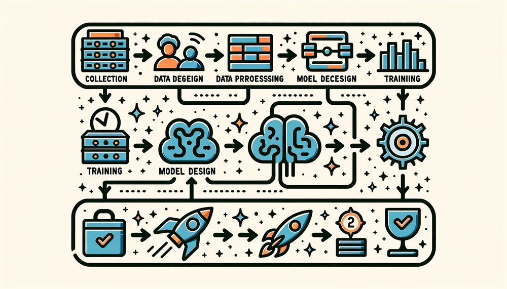

ML Workflow

Purpose
Why do you need to see the whole map before walking any single path?
The AI Triad (Data, Algorithm, Machine) names the components of every ML system, and ML Systems showed that where you deploy determines the physical constraints each component must satisfy. Teams often treat these as separate concerns: one team collects data, another designs the model, a third provisions hardware. Yet the Triad’s deepest lesson is that these components interact. The data you collect constrains which algorithms are feasible. The algorithm you choose dictates what hardware can run it. The hardware you deploy on reshapes what data you can process. Pull on any single thread and the entire system shifts. These interactions play out across components and across time: a model that performs well at launch degrades as the data distribution drifts, forcing retraining that may demand different hardware or revised data pipelines. Optimizing each piece in isolation is how teams build accurate models that cannot be deployed and efficient pipelines that feed the wrong data. A data engineer who sees how preprocessing choices constrain downstream architectures builds different pipelines than one who treats data preparation as an isolated task; a model developer who knows the deployment target’s memory budget from day one makes different architecture decisions than one chasing accuracy in a vacuum. Before diving into the details of any one component, you need to understand how they all connect: the big picture of how an ML system is built, evaluated, and sustained as a coherent whole.
Learning Objectives
- Describe the six core ML lifecycle stages and their feedback-driven relationships
- Compare ML lifecycle workflows to traditional software development and explain why ML requires specialized approaches
- Apply systems thinking principles to trace how decisions propagate across lifecycle stages
- Analyze how problem definition choices cascade through data collection, model development, and deployment using the Constraint Propagation Principle (\(2^{N-1}\) cost escalation)
- Evaluate trade-offs between model performance, deployment constraints, and resource limitations using the iron law of Workflow
- Explain why iteration velocity compounds into system quality advantages using the Iteration Tax analysis
- Trace how feedback loops at multiple timescales (real-time monitoring through quarterly reviews) enable continuous system improvement
ML Lifecycle
ML systems are composed of three interacting elements (the AI Triad from Introduction) and run under physical constraints that partition deployment into four paradigms: Cloud, Edge, Mobile, and TinyML (ML Systems). The parts and the operating environments are now in place. The missing piece is orchestration: how these components connect into a functioning system.
Consider what happens without orchestration. Day one: “Build a diagnostic model for rural clinics.” Day 90: 95 percent accuracy on the test set. Day 120: 96 percent accuracy after a month of architecture tuning. Day 150: model handed to deployment engineers. Day 151: deployment engineers report the model requires 4 GB of memory. Day 152: someone checks the deployment target—tablets in mobile clinics with 512 MB available. Day 153: five months of work is discarded.
The model’s accuracy was excellent. The team’s machine learning skills were excellent. The failure was a workflow failure. A deployment constraint that should have shaped every decision from day one was discovered only after the work was done. The tablet’s memory limit should have propagated backward to the first architecture meeting, constraining which models were even worth considering. Instead, the team optimized each component in isolation (data collection, architecture selection, training), and the integration failure appeared only when the pieces were assembled. This is the default outcome when ML development lacks systematic orchestration.
This chapter introduces the ML Workflow, an engineering framework that prevents such failures by making constraints explicit at each development stage and tracing how they propagate across stages. The Workflow marks a transition from model researcher to systems engineer. A researcher optimizes individual elements: a better architecture, a cleaner dataset, a faster accelerator. A systems engineer orchestrates those elements into production systems that reliably deliver value. Presenting this framework before the detailed technical chapters is deliberate: understanding how the pieces fit together changes how each piece is learned. A data engineer who understands that preprocessing decisions constrain model architectures approaches data pipelines differently than one who treats data preparation as an isolated task. A model developer who knows the deployment target from day one makes different architecture choices than one optimizing accuracy in a vacuum. The Workflow provides the mental map that makes each subsequent chapter’s contributions legible within the larger system.
The orchestration framework is what we call the machine learning lifecycle—a structured, iterative process1 that guides the development, evaluation, and improvement of ML systems (Amershi et al. 2019). We define it formally:
1 CRISP-DM (Cross-Industry Standard Process for Data Mining): The 1996 process model that first codified data-intensive system development as six interconnected, iterative phases rather than a linear waterfall. Its core design principle (feedback loops between all phases) directly informs the modern ML lifecycle’s structure, where a constraint violation discovered during deployment costs over 100\(\times\) more to remediate than one caught during data understanding.
Definition 1.1: Machine Learning Lifecycle
Machine Learning Lifecycle is the continuous engineering discipline of managing System Entropy across the Data, Algorithm, and Machine axes.
- Significance (Quantitative): It transforms the linear software “release” into a Continuous Loop of monitoring, retraining, and redeployment to maintain the system’s Duty Cycle (\(\eta\)).
- Distinction (Durable): Unlike a Traditional Software Lifecycle, which degrades primarily through code modification, the ML Lifecycle recognizes that models degrade through Data Drift even when the code remains untouched.
- Common Pitfall: A frequent misconception is that the lifecycle ends at “Deployment.” In reality, deployment is the Beginning of the Feedback Loop: monitoring insights are the “source code” for the next iteration of the model.
Throughout this chapter, we use lifecycle to describe the stages themselves and workflow to describe the engineering discipline of orchestrating them; the lifecycle is what gets traversed, the workflow is how the traversal is managed. This distinction requires systems thinking: analyzing how a system’s parts interrelate rather than treating them in isolation. These patterns (formalized in Section 1.9 and illustrated throughout this chapter with a detailed case study) explain why ML systems require integrated engineering approaches rather than sequential component optimization.
To see how these stages interconnect, examine Figure 1, which traces two parallel pipelines through the complete lifecycle. Follow the data pipeline (green, top row) as it transforms raw inputs through collection, ingestion, analysis, labeling, validation, and preparation into ML-ready datasets. Then follow the model development pipeline (blue, bottom row) as it takes these datasets through training, evaluation, validation, and deployment to create production systems. Pay particular attention to the curved feedback arrows connecting deployment back to earlier stages: one returns monitoring insights to data collection, another feeds evaluation results back to training. These feedback paths create the continuous improvement cycles that distinguish ML from traditional linear development.
{kind=link}
This framework provides scaffolding for the technical chapters ahead. The data pipeline receives comprehensive treatment in Data Engineering, model training scales up in Model Training, software frameworks enabling iterative development appear in ML Frameworks, and deployment and ongoing operations unfold in ML Operations. The interconnections among these pieces must be understood first, because each technical chapter assumes familiarity with the overall workflow.
The conceptual stages of the ML lifecycle establish the what and why of the development process. The operational implementation of this lifecycle through automation, tooling, and infrastructure constitutes the how, the domain of MLOps. ML Operations explores these operational practices in detail. This distinction matters: the lifecycle is the conceptual framework; MLOps is the operational machinery that implements it at scale.
Quantifying the ML lifecycle
Understanding the lifecycle conceptually is necessary but insufficient for engineering decisions. Quantitative characterization reveals where effort and compute actually go in ML projects, exposing which stages bottleneck development and where optimization investments yield the highest returns.
Time allocation across stages follows a consistent pattern across industries. Data-related activities (collection, cleaning, labeling, validation, and preparation, covered comprehensively in Data Engineering) consume 60–80 percent of total project time (CrowdFlower 2016). Model development and training (the focus of Model Training), despite receiving the most research attention, typically represents only 10–20 percent of effort. The remaining 10–20 percent goes to deployment, integration, and initial monitoring setup. This distribution surprises teams accustomed to traditional software where implementation dominates. In ML projects, the “source code” is the data, and preparing that source code is the primary engineering activity. For a concrete breakdown, turn to Figure 2—data cleaning and organizing alone accounts for 60 percent of practitioner effort.
{kind=link}
Beyond time allocation, iteration cycles characterize successful ML projects. Return to Figure 1 and notice the feedback loops driving these iterations: each arrow represents a path that teams traverse repeatedly. Production-ready ML systems typically require 4–8 complete iteration cycles, where each cycle may revisit multiple stages. Understanding what triggers these iterations guides resource allocation. Data quality issues (missing labels, distribution mismatches, preprocessing errors) drive approximately 60 percent of iterations, making data engineering the dominant source of rework. Architecture and training choices (model capacity, hyperparameters, training instability) account for roughly 25 percent, while infrastructure and deployment issues (latency violations, resource constraints, integration failures) drive the remaining 15 percent.
These proportions explain why data engineering capabilities often determine project success more than modeling sophistication. They also explain a structural choice in this book: Part I concludes with Data Engineering precisely because data is where most effort goes, most iterations originate, and most failures begin. Understanding the data pipeline first provides leverage over the single largest source of project risk before the modeling, training, and optimization techniques that follow.
The cost of late discovery follows an exponential pattern2 that we formalize as the Constraint Propagation Principle in Section 1.9. Late-stage constraint discoveries create exponential cost escalation because violations must be corrected across multiple preceding stages. This exponential cost structure motivates the stage interface contracts in Table 1: validating outputs at each stage transition catches violations early when correction costs remain manageable.
2 Exponential Cost Escalation: Barry Boehm’s 1981 Software Engineering Economics first quantified this pattern for traditional software, showing that defects found post-deployment cost up to 100\(\times\) more to fix than those caught during requirements. ML systems exhibit even steeper escalation because late-discovered constraints invalidate learned model weights, not just code—retraining has no counterpart in traditional software remediation, and the data engineering rework it triggers compounds across every preceding pipeline stage.
| Stage | Input Contract | Output Contract | Quality Invariant |
|---|---|---|---|
| Problem Definition | Business requirements; operational context | Measurable objectives; deployment paradigm selection; resource constraints | All success criteria are quantifiable; target deployment paradigm is explicit |
| Data Collection & Preparation | Objectives; deployment target; quality requirements | Versioned dataset with schema; preprocessing pipeline; data validation rules | Distribution approximates anticipated production environment; labeling meets accuracy requirements |
| Model Development & Training | Dataset; accuracy targets; resource constraints | Trained model weights; training configuration; experiment logs | Meets accuracy thresholds within computational budget; architecture compatible with deployment target |
| Evaluation & Validation | Trained model; held-out test data; evaluation criteria | Performance metrics across subgroups; failure mode analysis; validation certificate | No critical subgroup falls below minimum thresholds; calibration meets domain requirements |
| Deployment & Integration | Validated model; infrastructure requirements; SLA targets | Serving endpoint; monitoring instrumentation; rollback procedures | Latency and throughput meet paradigm requirements; integration tests pass |
| Monitoring & Maintenance | Live system; performance baselines; alert threshold | Drift detection alerts; retraining triggers; incident reports | Performance stays within acceptable bounds; degradation detected before user impact |
This compounding cost of slow iteration creates what we call the iteration tax, quantified in the following exercise.
Napkin Math 1.1: The Iteration Tax
The Math: In six months (~26 weeks), you can run:
- Large Model: 26 experiments at 1 week each. Each experiment improves accuracy by ~0.1 percent (diminishing returns).
- Small Model: 26 \(\times\) 168 = 4,368 experiments at 1 hour each. Even with smaller gains per iteration, the compound effect is substantial.
The Systems Insight: If each iteration improves accuracy by 0.1 percent on average, the small model reaches: 90 percent + (100 \(\times\) 0.1 percent) = 99 percent theoretical ceiling. The large model reaches: 95 percent + (26 \(\times\) 0.1 percent) = 99 percent (capped at ceiling). Even assuming we use only a fraction of the theoretical capacity (for example, 100 effective iterations out of thousands possible), the compound effect dominates. In practice, the small model’s rapid iteration enables discovering better architectures, data augmentations, and hyperparameters.
Conclusion: Iteration Velocity is a Feature. A system that allows ten experiments/day will almost always eventually outperform a system that allows one experiment/week, even if the latter starts with a better model. This “iteration tax” explains why startups with fast iteration often outperform larger teams with slower cycles. For our DR screening scenario, the lightweight model’s rapid iteration cycle enables the team to experiment with data augmentations, preprocessing pipelines, and architecture variations far more quickly, ultimately converging on a more robust screening system despite starting at lower accuracy.
The iteration tax makes a broader point: ML workflows are not slow versions of traditional software lifecycles. They are structurally different, and the differences show up in where time is spent, how feedback loops operate, and how late discoveries compound cost.
ML vs. traditional software
The quantitative realities established earlier (60–80 percent data allocation, 4–8 iteration cycles, and \(2^{N-1}\) cost escalation) have no counterparts in traditional software engineering. Understanding exactly where these departures occur, and why conventional lifecycle models cannot accommodate them, motivates the specialized approaches that the rest of this chapter develops.
Traditional lifecycles consist of sequential phases: requirements gathering, system design, implementation, testing, and deployment3 (Royce 1970). Each phase produces specific artifacts that serve as inputs to subsequent phases. In financial software development, the requirements phase produces detailed specifications for transaction processing, security protocols, and regulatory compliance. These specifications translate directly into system behavior through explicit programming. This deterministic approach contrasts sharply with the probabilistic nature of ML systems that Introduction introduced, where outputs are statistical predictions rather than deterministic transformations and where “correct” behavior is defined by distributions rather than specifications.
3 Waterfall Model: Enforces a strict sequential process where system requirements are finalized before implementation begins, a practice inherited from physical manufacturing. This core assumption, that the specification is stable, fails for ML systems where the training data itself is the specification and its properties can only be discovered through empirical iteration. Discovering a fundamental data issue during a late “testing” phase, rather than during initial experimentation, can increase its remediation cost by over 100x.
Machine learning systems require a structurally different approach. Consider financial transaction processing: traditional systems follow predetermined rules (if account balance > transaction amount, then allow transaction), while ML-based fraud detection systems learn to recognize suspicious patterns from historical transaction data. This shift from explicit programming to learned behavior reshapes the development lifecycle, altering how we approach system reliability and robustness.
These differences alter how lifecycle stages interact. Unlike traditional software where later phases rarely influence earlier ones, ML systems require continuous feedback loops: deployment insights reshape data collection, monitoring drives model updates, and production data reveals distributional properties invisible in development. This dynamism demands continuous deployment practices that traditional release cycles cannot accommodate (Section 1.8).
Table 2 contrasts these differences across six development dimensions, from problem definition through maintenance. These differences reflect the core challenge of working with data as a first-class citizen in system design, something traditional software engineering methodologies were not designed to handle4.
4 Data Versioning: Unlike code, which changes through discrete, auditable commits, data can drift gradually (distribution shift), suddenly (schema migration), or subtly (label quality degradation). Git cannot version multi-terabyte datasets, forcing specialized tools like DVC and Git LFS. The systems consequence: without data versioning, teams cannot reproduce a prior training run or diagnose whether an accuracy regression stems from a code change or a data change, making root-cause analysis intractable.
| Aspect | Traditional Software Lifecycles | Machine Learning Lifecycles |
|---|---|---|
| Problem Definition | Precise functional specifications are defined upfront. | Performance-driven objectives evolve as the problem space is explored. |
| Development Process | Linear progression of feature implementation. | Iterative experimentation with data, features and models. |
| Testing and Validation | Deterministic, binary pass/fail testing criteria. | Statistical validation and metrics that involve uncertainty. |
| Deployment | Behavior remains static until explicitly updated. | Performance may change over time due to shifts in data distributions. |
| Maintenance | Maintenance involves modifying code to address bugs or add features. | Continuous monitoring, updating data pipelines, retraining models, and adapting to new data distributions. |
| Feedback Loops | Minimal; later stages rarely impact earlier phases. | Frequent; insights from deployment and monitoring often refine earlier stages like data preparation and model design. |
The erosion of determinism: Breaking OS assumptions
This shift from code-centric to data-centric development erodes more than just project management models; it breaks the fundamental assumptions of modern Operating Systems. For over fifty years, OS kernels (from Unix to Windows) have been optimized for Spatial and Temporal Locality5: the belief that if a program reads byte \(X\), it will likely read \(X+1\) soon, and if it uses memory address \(Y\), it will likely reuse it.
5 Locality of Reference: Formalized by Peter Denning in 1968 as the principle governing virtual memory design. The cost of violating locality is quantitative: an L1 cache hit costs approximately 1 ns, while a DRAM access costs 50–100 ns (50–100\(\times\) penalty), and a Non-Volatile Memory Express (NVMe) SSD read costs 10–100 \(\mu\)s (10,000–100,000\(\times\) penalty). Random shuffling of multi-terabyte datasets during each training epoch triggers the worst case at every level of the memory hierarchy, explaining why ML data loaders must implement their own prefetching logic rather than relying on OS page cache heuristics.
ML workflows violate these abstractions at scale. A multi-terabyte dataset being randomly shuffled during every training epoch presents a “worst-case” workload for traditional file system buffers and virtual memory prefetchers. When every “instruction” (a sample) is fetched stochastically from a massive pool, the OS’s predictive caching logic fails, and the system defaults to expensive disk I/O or network transfers. A systems engineer must acknowledge that the “Abstractions of the 1970s,” once designed to hide hardware latency, are often the primary sources of the Overhead Term (\(L_{\text{lat}}\)) in the iron law for Software 2.0. Bridging this gap requires the specialized data engineering and hardware-aware optimizations we examine in the following Parts.
These distinctions translate directly into the structured six-stage framework that organizes how ML projects unfold, each stage presenting unique challenges that traditional software methodologies cannot address. The differences just covered should be clear before examining that framework.
Checkpoint 1.1: ML vs. Traditional DevOps
MLOps is not merely DevOps for models. Ensure you grasp the key differences:
Self-Check: Question
Team A ships a DR screening model and considers the project complete once the model reaches production. Team B treats the production launch as the start of ongoing retraining driven by drift detection and subgroup monitoring. Which team’s posture matches the ML lifecycle as this chapter defines it, and why?
- Team A, because once a model meets its test-set targets and clears validation, the engineering work shifts to traditional service-operations tasks rather than lifecycle tasks.
- Team B, because the lifecycle is a continuous engineering discipline for managing system entropy across the Data, Algorithm, and Machine axes, so deployment is the start of the feedback loop rather than its end.
- Neither, because the lifecycle in this chapter is really a label for the MLOps tooling layer and does not prescribe whether teams keep iterating after launch.
- Team A, because a model that still satisfies its original specification cannot have degraded, so post-launch retraining is a discretionary polish step rather than lifecycle work.
Explain why a team that spends months improving test-set accuracy can still fail at building a usable ML system if deployment constraints are discovered only after model development.
A DR screening team plans a six-month project and budgets its engineer-months assuming model architecture and training will consume most of the effort, because that is where the research papers focus. Using the chapter’s quantitative breakdown, which reallocation should they make before kickoff, and why?
- Shift the majority of engineer-months to deployment and monitoring, because production integration is reported at 60–80 percent of total effort for ML projects.
- Keep model development as the dominant bucket, because architecture and hyperparameter sweeps drive the 4–8 iteration cycles that production-ready systems require.
- Shift 60–80 percent of engineer-months to data collection, labeling, validation, and preparation, because those activities dominate ML project effort while model development accounts for only 10–20 percent.
- Split the budget evenly across all six lifecycle stages, because the chapter argues that stage contracts equalize the engineering load once they are enforced.
True or False: A team can adopt a mostly sequential waterfall workflow for an ML project if they freeze the codebase early, because later stages mainly verify the existing implementation rather than forcing changes to earlier decisions.
A training pipeline randomly shuffles a multi-terabyte dataset every epoch, storing samples in object storage backed by a mix of NVMe and spinning disk. End-to-end throughput is poor even though the accelerator advertises ample FLOPs. Which explanation best matches the chapter’s OS-abstraction argument, and what does it imply the team cannot fix with more compute?
- The workload defeats the spatial and temporal locality assumptions that OS page caching and prefetching rely on, so stochastic sample access penalizes the memory hierarchy at every tier — a penalty that more peak FLOPs cannot reduce because the stall is in data delivery.
- Random shuffling makes the workload compute-bound, so adding a faster accelerator or more parallel kernels should close the throughput gap.
- Training bypasses the memory hierarchy entirely once the accelerator is warm, so storage latency is irrelevant to end-to-end throughput regardless of shuffle strategy.
- Probabilistic models must reread identical samples at fixed intervals to preserve statistical correctness, so throughput is bounded by a re-read constraint rather than by data access patterns.
Lifecycle Stages
Where traditional software follows requirements through implementation to testing, ML systems demand a different organizational structure: one that accommodates iterative experimentation, data-driven evolution, and continuous feedback. The six-stage framework that follows captures these differences.
As Figure 3 illustrates, the ML lifecycle distills into six core stages. Read them left to right: Problem Definition establishes objectives and constraints; Data Collection and Preparation encompasses the data pipeline; Model Development and Training creates models; Evaluation and Validation ensures quality; Deployment and Integration brings systems to production; and Monitoring and Maintenance ensures continued effectiveness. The prominent feedback loop connecting monitoring back to data collection (the key insight in the diagram) shows that production signals (drift detection, performance degradation, new failure modes) flow back to inform earlier phases, capturing the cyclical nature that distinguishes ML from linear software development.
{kind=link}
To make these stages concrete, consider how they apply to MobileNetV2 (Network Architectures), one of our Lighthouse Models targeting mobile deployment. For MobileNetV2, Problem Definition establishes tight constraints: <14 MB model size, <300 MFLOPs, real-time inference on mobile GPUs. Data Collection must account for on-device preprocessing limitations. Model Development uses depthwise separable convolutions6 specifically designed to meet the FLOP budget. Evaluation validates both accuracy and latency on target devices. Deployment targets mobile NPUs with quantization. Monitoring tracks performance across diverse device populations. Each stage’s decisions propagate through subsequent stages, and the workflow framework makes these dependencies explicit. A DR screening model optimized for rural clinic deployment faces analogous pressures: limited device memory, strict power budgets, and the need for real-time inference without reliable connectivity. These shared constraints are why we use DR as the chapter’s running case study.
6 Depthwise Separable Convolutions: Factorizes a standard convolution into a per-channel spatial filter (depthwise) followed by a \(1 \times 1\) channel mixer (pointwise), reducing FLOPs by roughly 8–9\(\times\) for typical kernel sizes. This reduction is what makes MobileNetV2’s sub-300 MFLOPs budget feasible: without it, the same accuracy would require a standard convolution layer consuming 2–3\(\times\) the device’s compute ceiling. Network Architectures covers these architectural techniques in depth.
The diagram suggests linear progression, but the feedback loop reveals the true iterative nature of ML development. Verify your understanding of this cyclical process before proceeding.
Checkpoint 1.2: The Workflow Cycle
The ML lifecycle is not a straight line; it is a spiral of continuous refinement.
The Stages
Figure 3 presents a linear narrative, but experienced practitioners recognize that these stages interconnect closely. Each stage corresponds to specific terms in the performance equation, and this mapping reveals what we call the iron law of Workflow: decisions made during data collection constrain what is achievable during model development, which in turn determines deployment requirements. The following perspective formalizes how each lifecycle stage maps to the iron law of ML Systems:
Systems Perspective 1.1: The iron law of Workflow
- Data Collection and Preparation: Primarily determines the Data (\(D_{\text{vol}}\)) term. High-quality curation reduces the volume of data needed to reach a target accuracy.
- Model Development and Training: Defines the Operations (\(O\)) term. Architectural choices (for example, transformers vs. convolutional neural networks (CNNs)) set the computational floor.
- Evaluation and Validation: Verifies whether the achieved Efficiency (\(\eta\)) and model accuracy jointly meet deployment requirements on the target hardware.
- Deployment and Integration: Focuses on minimizing the Overhead (\(L_{\text{lat}}\)) tax through efficient serving infrastructure.
Viewed this way, managing the workflow is mathematically equivalent to minimizing the total system latency and cost.
The binding constraint differs dramatically across workload archetypes, causing each lifecycle stage to optimize different iron law terms. Table 3 shows how the same workflow stages manifest for three of the five Lighthouse Models introduced in Introduction:
| Stage | ResNet-50 (Compute Beast) | DLRM (Sparse Scatter) | Keyword Spotting (Tiny Constraint) |
|---|---|---|---|
| Data Eng | Throughput: Target > 80 percent GPU utilization via prefetching and compiled augmentation | Latency: Feature store lookups < 2 ms; embedding tables dominate storage costs | Capacity: Curate data to fit 256 KB RAM; aggressive filtering over accumulation |
| Training | Compute Bound: Maximize Model FLOPs Utilization (\(\eta\)); mixed precision to saturate Tensor Cores | I/O Bound: Optimize sparse embedding lookups; memory bandwidth (\(BW\)) limits throughput | Model Search: Neural Architecture Search (NAS) for smallest architecture; quantization-aware training (QAT) required |
| Deploy | Batching: Batch size > 128 to maximize throughput; latency secondary to cost | SLA: Strict < 10 ms p99 latency; feature freshness requirements | Energy: < 1 mW budget; always-on inference without battery drain |
Production systems rarely fall neatly into a single archetype. A medical imaging classifier, for instance, is compute bound during training (like ResNet-50, requiring sustained GPU utilization over large image datasets) yet faces strict energy and memory constraints when deployed to portable clinic devices (like the TinyML archetype). Understanding how the same workflow framework adapts to each archetype, and how a single project can span multiple archetypes simultaneously, is essential for making sound engineering decisions.
Each stage of this workflow presents distinct engineering challenges, from curating high-quality datasets to maintaining model performance in production. To make these challenges concrete rather than abstract, we need a case study that threads through every stage. The right case study should appear simple on the surface but reveal deep complexity in practice, span enough of the deployment spectrum to exercise the workflow framework, and have a well-documented journey from research to production so that we can learn from real decisions rather than hypothetical ones.
Case study: DR screening
DR screening systems (Gulshan et al. 2016) meet all three criteria. The problem appears straightforward (classify retinal images as healthy or diseased), but the path from laboratory success to clinical deployment illustrates every aspect of lifecycle complexity. The development journey is well documented, and the challenges span every lifecycle stage from data collection through monitoring.
7 Diabetic Retinopathy (DR): Affects 93–103 million people worldwide, with 22–35 percent of diabetic patients developing retinopathy. In developing countries, up to 90 percent of DR-caused vision loss is preventable with early detection, yet specialist access remains severely limited. This gap defines the ML systems problem: the screening task must be automated at scale on low-cost edge hardware in clinics that lack both ophthalmologists and reliable connectivity, making inference latency, model size, and offline capability binding deployment constraints.
Diabetic retinopathy affects over 100 million people worldwide and is a leading cause of preventable blindness7. To appreciate what the model must learn, look closely at Figure 4: the clinical challenge is detecting characteristic hemorrhages (dark red spots) that indicate disease progression. Rural areas in developing countries have approximately one ophthalmologist per 100,000+ people, making AI-assisted screening not merely convenient but medically essential.

Initial research achieved expert-level performance in controlled settings. However, the journey to clinical deployment revealed how technical excellence must integrate with data quality challenges, infrastructure constraints in rural clinics, regulatory requirements, and workflow integration8. The same constraint propagation dynamics apply whether the target is medical imaging systems or mobile applications like MobileNetV2, and the lifecycle stages ahead trace these dynamics in concrete detail.
8 Healthcare AI Deployment Gap: Over 80 percent of healthcare AI projects with strong laboratory accuracy fail to reach clinical deployment. The gap explains why the DR system’s expert-level area under the curve (AUC) did not translate directly to clinic adoption: success depends less on model accuracy and more on integration with clinical workflows, data infrastructure in resource-limited settings, and regulatory clearance pathways. For ML systems engineers, this means deployment constraints, not model metrics, are the binding bottleneck.
Stage interface specification
Each lifecycle stage operates as a distinct engineering phase with defined inputs, outputs, and quality invariants. Think of these as API contracts between teams: just as a microservice must adhere to its Swagger definition to prevent system crashes, a data pipeline must adhere to its schema and distribution contracts to prevent model failures. Table 1 formalizes these contracts, making explicit what each stage must receive and produce. This specification transforms the abstract lifecycle diagram into actionable engineering requirements. When a stage’s output fails to meet its contract, the deficiency propagates forward, compounding costs at each subsequent stage.
This specification reveals why ML projects experience the iteration cycles diagrammed in Figure 3. When a downstream stage discovers that an upstream contract was violated (for example, evaluation reveals the training data distribution does not match production), the project must iterate back to fix the root cause. Teams that validate contracts at each stage transition catch violations early, when correction costs are lowest. This validation process is best understood as auditing stage transitions.
Example 1.1: Auditing Stage Transitions
Audit Checklist (from Output Contract):
- Measurable objectives: ✓ “Achieve >90 percent sensitivity and >80 percent specificity for referable cases”
- Deployment paradigm selection: ✗ Missing. Team says “we will figure out deployment later”
- Resource constraints: ✗ Incomplete. Budget specified, but no latency or memory targets
Quality Invariant Check:
- “All success criteria are quantifiable”: ✓ Sensitivity/specificity targets are quantifiable
- “Target deployment paradigm is explicit”: ✗ VIOLATION. No paradigm selected
Audit Result: Stage transition blocked. Two contract violations detected.
Cost Analysis: Proceeding without deployment paradigm selection risks discovering at stage 5 (Deployment) that the target is Edge deployment with <100 ms latency and <500 MB memory. By the Constraint Propagation Principle, this would cost \(2^{4} = 16\times\) the effort of resolving it now at stage 1.
Resolution: Return to Problem Definition. Establish deployment target (for example, “Edge deployment on NVIDIA Jetson with <50 ms inference latency and <200 MB model size”). This constraint will shape Data Collection (preprocessing must be device-compatible), Model Development (architecture must fit memory budget), and Evaluation (must include device-specific performance testing).
Time saved: 2–4 iteration cycles avoided, approximately 8–16 weeks of rework prevented.
The same pattern applies to MobileNetV2: if Problem Definition specifies “mobile deployment” without the specific constraints established earlier (model size and FLOP budget), the team might develop a 200 MB ResNet-50 variant optimized for accuracy, only to discover at Deployment that it violates every mobile constraint.
The DR case study and Stage Interface Specification provide the concrete context and formal contracts that ground each lifecycle stage. The first stage—Problem Definition—determines every constraint that subsequent stages must satisfy.
Self-Check: Question
Order the following lifecycle phases in the sequence this chapter establishes for a fresh ML project: (1) Deployment and Integration, (2) Problem Definition, (3) Monitoring and Maintenance, (4) Data Collection and Preparation, (5) Model Development and Training, (6) Evaluation and Validation.
A medical imaging team declares Problem Definition complete with quantified sensitivity and specificity targets, but the deployment paradigm (Cloud, Edge, Mobile, or TinyML) is marked as ‘TBD — to be decided after model development.’ Using the stage interface table, what should the audit verdict be, and why?
- Complete — quantifiable success metrics satisfy the Output Contract, and the paradigm can be chosen later once the accuracy envelope is known.
- Complete if the team commits in writing to compress or distill the trained model during deployment to fit whatever paradigm they later select.
- Blocked — the Output Contract explicitly requires the deployment paradigm and resource constraints to be set at Problem Definition, because those choices reshape what data must be collected and what architectures are even feasible.
- Blocked only if the project later proves infeasible — if Data Collection and Model Development succeed under multiple paradigms, the missing field becomes retroactively harmless.
The chapter uses MobileNetV2 with its sub-300 MFLOP budget to illustrate workflow thinking rather than treating it as just an architecture case study. Explain what MobileNetV2 teaches about how constraints propagate across lifecycle stages.
Which mapping between lifecycle stages and iron-law terms is most consistent with the chapter’s ‘iron law of Workflow’ perspective, and why do the other mappings misread the framework?
- Data Collection and Preparation → D_vol; Model Development and Training → O; Deployment and Integration → L_lat — because each stage primarily sets the cost of its matching term.
- Problem Definition → BW; Evaluation and Validation → O; Monitoring and Maintenance → D_vol — because these stages are where those quantities are measured.
- Deployment and Integration → D_vol; Monitoring and Maintenance → O; Data Collection → L_lat — because these stages constrain the largest budgets in production systems.
- Evaluation and Validation → R_peak; Data Collection → L_lat; Problem Definition → O — because validation tests peak performance and early stages set startup overhead.
A senior engineer reviewing the DR project’s stage transitions notices that Problem Definition handed Data Collection only a brief prose summary, with no documented schema, no sensitivity threshold, and no deployment paradigm specified. What is the clearest systems-level reason the chapter gives for why this hand-off should be rejected, rather than accepted with a promise to clarify later?
- Because every stage transition should pass a formal audit, regardless of whether the downstream work could proceed with partial information.
- Because stage boundaries function as interface contracts: unchecked inputs let a single missing constraint (a sensitivity threshold, a paradigm, a schema) propagate silently into later stages, where the Constraint Propagation Principle makes the correction cost roughly 2^(N-1) times larger than catching it now.
- Because data engineers prefer structured hand-offs, so an ad-hoc prose summary creates friction that reduces team morale over time.
- Because the senior engineer’s role is primarily enforcement, so any ambiguity at a stage boundary is a policy violation regardless of downstream impact.
Problem Definition
A product manager writes: “Build a model that detects diabetic retinopathy.” That single sentence conceals a dozen engineering decisions. The sentence conceals decisions about sensitivity thresholds for patient safety, hardware capabilities in rural clinics, latency budgets that keep clinicians engaged, and regulatory frameworks governing approval. In traditional software, requirements translate directly into implementation rules. In ML systems, defining what the system should do is inseparable from defining how it will learn to do it—and the physical constraints under which it must operate. This first stage, the leftmost box in Figure 3, lays the foundation for all subsequent phases in the ML lifecycle.
The DR screening case makes this concrete. What appears to be a straightforward classification task (detect disease in retinal photographs) actually requires balancing five competing constraints: diagnostic accuracy (patient safety), computational efficiency (rural clinic hardware), workflow integration (clinical adoption), regulatory compliance (FDA approval), and cost-effectiveness (sustainable deployment in resource-limited settings). Each constraint tightens the feasible design space for the others: pursuing higher accuracy through larger models conflicts with the hardware budget; achieving regulatory compliance demands annotation protocols that increase data collection costs. This multi-constraint optimization problem has no analogue in traditional software development.
Constraint layers
The DR example reveals that ML problem definitions are not single requirements but stacks of interacting constraint layers. Accuracy constraints (>90 percent sensitivity, >80 percent specificity across diverse populations and equipment) sit on top of infrastructure constraints (edge devices with limited compute, intermittent connectivity, inference within clinical workflow timeframes) which sit on top of regulatory constraints (FDA validation, audit trails, privacy compliance). Each layer narrows the feasible design space for the layers above it.
This layered structure generalizes beyond healthcare. Any ML problem definition must address at least three constraint layers: statistical (what accuracy, across which subpopulations), physical (what hardware, under what latency and memory budgets), and operational (what regulatory, organizational, or workflow requirements apply). The Constraint Propagation Principle (Section 1.9) explains why: a constraint that exists but remains unspecified does not disappear—it simply surfaces later at exponentially higher cost.
The specific constraints for the DR system did not emerge from technical analysis alone. They required systematic collaboration between engineers, ophthalmologists, and clinic administrators to translate clinical needs into measurable engineering requirements. Key decisions (balancing model complexity with hardware limitations, ensuring interpretability for healthcare providers, and accounting for patient privacy) emerged from this cross-disciplinary process. Without domain expertise, the engineering team might have optimized for aggregate accuracy while missing the sensitivity threshold that determines clinical safety.
Problem definitions evolve
Unlike traditional software specifications that stabilize after requirements review, ML problem definitions are living documents that evolve as the system scales. The DR system initially targeted a handful of clinics with consistent imaging setups. Scaling to hundreds of clinics with varying equipment, staff expertise, and patient demographics9 forced revisions to every constraint layer: accuracy targets needed stratification by demographic group, infrastructure constraints had to accommodate heterogeneous hardware, and regulatory requirements expanded to include fairness reporting.
9 Demographic Drift: Models trained on the initial handful of clinics learn statistical biases specific to that population. Scaling to hundreds of clinics with varying patient demographics exposes these biases as performance gaps, forcing the problem definition to evolve from a single aggregate accuracy target to stratified per-group thresholds. Error rate disparities between demographic groups can exceed 40\(\times\), making fairness reporting a binding engineering constraint that reshapes every downstream stage.
This evolution is not a sign of poor initial planning—it is inherent to ML systems. Scaling exposes edge cases invisible at pilot scale, and production data reveals distributional properties that no training set fully captures. The problem definition must accommodate this reality by specifying both current targets and the mechanisms for revising them: which metrics trigger re-evaluation, who approves revised thresholds, and how changes propagate to downstream stages.
With objectives defined and constraints layered, the next question becomes immediate and practical: where does the data come from that teaches the model to meet these objectives?
Self-Check: Question
Why is the statement ‘Build a model that detects diabetic retinopathy’ inadequate as a complete problem definition for an ML system?
- Because it names a disease rather than a specific deployment paradigm label, and every ML problem definition must start with one of Cloud, Edge, Mobile, or TinyML.
- Because it omits the interacting statistical, physical, and operational constraints (sensitivity thresholds, rural-clinic hardware limits, clinical workflow fit, FDA requirements) that determine what system is actually feasible.
- Because clinical applications should begin with model architecture selection rather than task framing, so the sentence is in the wrong order.
- Because ML problem definitions should avoid measurable thresholds until data has been collected, and this sentence implies a measurable goal.
Explain why domain experts (ophthalmologists, clinic administrators) must participate in problem definition for a high-stakes ML system such as DR screening, rather than being consulted only at evaluation or deployment time.
A team pilots the DR system in three clinics with one aggregate accuracy target and succeeds. When they expand to 200 clinics across Thailand and India, sensitivity drops five to eight percent for specific demographic groups and on older fundus cameras. How does the chapter say the team should respond, and what does it say about the original definition?
- Keep the original aggregate accuracy target and address subgroup gaps only through improved monitoring dashboards, because changing targets mid-project signals poor planning.
- Freeze the problem definition and treat the subgroup drop as a training-data coverage bug, because problem definitions should remain fixed once a pilot succeeds.
- Revise the problem definition to include stratified subgroup thresholds and updated hardware assumptions, because scaling exposes constraints that were invisible at pilot scale — problem definitions are living documents that evolve with deployment reality.
- Delay subgroup analysis until a regulatory body requires a fairness audit, because treating subgroup variation as an active constraint increases project scope beyond what the pilot validated.
True or False: For a DR system, the clinical business goal (detect retinopathy early) is stable across scale, but the engineering targets that implement that goal (aggregate accuracy thresholds, per-subgroup sensitivity floors, per-device latency budgets) must be rewritten as the deployment expands from three pilot clinics to two hundred.
Data Collection
The constraints, metrics, and deployment targets from problem definition exist only on paper until a team acquires the data that will teach the model to satisfy them. This transition from defining goals to acquiring training data marks a critical juncture where many projects fail. As the quantitative data in Section 1.1.1 established, data-related activities consume the majority of project time, making decisions at this stage disproportionately consequential. In iron law terms, this stage primarily determines the Data (\(D_{\text{vol}}\)) term: the volume, quality, and format of training data that downstream stages must work with. The deployment constraints established during problem definition now become data requirements: if the model must run on edge devices, the data pipeline must produce inputs compatible with edge preprocessing. If the model must achieve 90 percent sensitivity across diverse populations, the data must include sufficient examples from each population.
Data collection and preparation is not a preliminary step but the primary engineering activity of most ML projects. Data Engineering addresses data engineering as its core focus. For DR screening, the challenge is substantial: the data must be statistically diverse enough to train a model that generalizes across populations, operationally feasible to collect in resource-limited clinics, and annotated with enough clinical rigor to satisfy regulatory scrutiny.
Problem definition decisions shape data requirements in the DR example. The multi-dimensional success criteria established (accuracy across diverse populations, hardware efficiency, and regulatory compliance) demand a data collection strategy that goes beyond typical computer vision datasets. Not all data contributes equally to learning, either—Data Selection shows that strategically selecting training examples can match the accuracy of the full dataset at a fraction of the compute cost, a principle that becomes critical when iteration velocity determines project success.
The DR system requires on the order of \(10^5\) retinal fundus photographs, each reviewed by multiple expert ophthalmologists. Expert consensus addresses the inherent subjectivity in medical diagnosis (two ophthalmologists may disagree on borderline cases) while establishing ground truth labels that can withstand regulatory scrutiny. The annotation process must capture clinically relevant features like microaneurysms, hemorrhages, and hard exudates across the full spectrum of disease severity.
High-resolution retinal scans can generate tens of megabytes per image, creating substantial infrastructure challenges. A clinic processing dozens of patients per day can produce gigabytes to tens of gigabytes of imaging data per week, exceeding the capacity of rural internet connections with only a few megabits per second of upload. This tension between bandwidth vs. compute forces architectural decisions toward edge-computing solutions rather than cloud-based processing.
Napkin Math 1.2: Bandwidth vs. Compute
The Math:
- Daily Data: 150 patients\(\times\) 10 photos\(\times\) 5 MB/photo = 8 GB/day.
- Upload Time: 7,500 MB / (2/8 MB/s) = 30,000 seconds ≈ 8.3 hours.
- The Constraint: If the clinic operates for 8 hours, uploading this data would require 104 percent of the clinic’s total operating time, effectively saturating the connection and blocking all other operations.
The Engineering Conclusion: A Cloud-only architecture is too “expensive” in terms of bandwidth. Moving to the edge requires uploading only detection summaries (~10 KB/patient), reducing bandwidth usage by 5,000\(\times\).
Lab-to-field data gap
Laboratory data and production data inhabit different worlds. When DR screening deploys to rural clinics across Thailand and India, images arrive from diverse camera equipment operated by staff with varying expertise, often under suboptimal lighting with inconsistent patient positioning. A model trained on high-quality research images from standardized fundus cameras may fail on blurry, poorly-lit images from older equipment—not because the algorithm is wrong, but because the data distribution has shifted beyond the training envelope.
As the Bandwidth vs. Compute exercise quantified, this data volume makes cloud-only processing infeasible. The architectural conclusion is edge deployment using specialized hardware such as NVIDIA Jetson10. Local preprocessing reduces bandwidth requirements by orders of magnitude but demands correspondingly more local computation, forcing a trade-off: simpler models that run on constrained hardware, or more powerful edge devices that increase per-clinic costs.
10 NVIDIA Jetson: Its integrated GPU provides the local compute necessary to preprocess data at the edge, directly addressing the bandwidth infeasibility of cloud-only processing. This hardware choice imposes the exact trade-off described, as its tight memory budget (4–32 GB shared) and power envelope (5–30 W) constrain model complexity. Developers are forced to use aggressively compressed models to fit within these limits, making model size a direct function of the per-clinic hardware cost.
A typical solution architecture emerges from data collection constraints: edge devices for local inference and preprocessing, clinic aggregation servers for data management and buffering, and cloud training infrastructure for periodic model updates. Typical deployments target end-to-end latency under 100 milliseconds and availability sufficient to support clinical workflow without connectivity-induced delays.
Patient privacy regulations often motivate federated learning architectures, enabling model training without centralizing sensitive patient data. This approach adds complexity to both data collection workflows and model training infrastructure but often proves necessary for regulatory approval and clinical adoption.
Distributed data infrastructure
As the number of clinics grows from a handful to hundreds, data infrastructure must scale accordingly. Each retinal image travels through multiple stages: clinic cameras capture the image, local systems provide initial storage and processing, quality validation checks ensure usability, secure transmission moves data to central systems, and finally, integration with training datasets completes the pipeline. The infrastructure decisions at each stage are shaped by the deployment constraints established during problem definition.
Different data access patterns demand different storage solutions. Teams typically implement tiered storage architectures11:
11 Tiered Storage: Places data on different storage media based on access frequency and performance requirements. The cost-performance gap is an order of magnitude: NVMe SSDs deliver 500,000+ input/output operations per second (IOPS) at ~$0.10/GB/month, while object storage costs ~$0.023/GB/month but with 100–200 ms latency. For ML training loops requiring sustained sequential reads at 1–10 GB/s, choosing the wrong tier converts a compute-bound training pipeline into an I/O-bound one, directly inflating the iron law’s Data term \((D_{\text{vol}}/BW)\).
- Hot Storage: High-throughput NVMe SSDs for data currently used in training loops.
- Warm Storage: S3-compatible object storage for recent datasets and active validation sets.
- Cold Storage: Low-cost archival storage (for example, AWS Glacier) for historical data required for regulatory audit trails but rarely accessed.
In practice, the boundary between tiers is dynamic: a dataset migrates from warm to hot when selected for the next training run, and from hot to cold when the model it trained is superseded. Automated lifecycle policies manage these transitions, promoting data based on training schedules and demoting it based on access recency—a pattern that Data Engineering explores in detail.
Rural clinic deployments face severe connectivity constraints that force a choice between transmission strategies. Clinics with reliable broadband can stream images in near-real-time for centralized processing, but clinics with intermittent satellite links, common in remote regions of India and sub-Saharan Africa, require store-and-forward architectures that batch images during connectivity windows and reconcile results asynchronously. The choice propagates through the entire stack: store-and-forward clinics need larger local storage buffers, more robust local inference capabilities, and conflict-resolution logic when locally generated predictions differ from later cloud-based analysis.
Infrastructure scalability poses a harder challenge than raw capacity. As the system grows from a handful of pilot clinics to hundreds of production sites, data heterogeneity grows faster than data volume: each clinic’s camera model, lighting environment, and operator habits produce subtly different image distributions. The infrastructure must handle increasing throughput while also tracking which data came from where. This provenance metadata proves essential for debugging accuracy regressions at specific sites and for satisfying the audit trail requirements that regulatory validation demands.
Managing data at scale
As ML systems expand, data collection challenges compound. In our DR example, scaling from initial clinics to a broader network introduces emergent complexity: significant variability in equipment, workflows, and operating conditions. Each clinic effectively becomes an independent data node12, yet the system must ensure consistent performance across all locations. Following the collaborative coordination patterns established earlier, teams implement specialized orchestration with shared artifact repositories, versioned APIs, and automated testing pipelines that enable efficient management of large clinic networks.
12 Federated Learning: Trains across the independent data nodes described here without centralizing patient data, addressing privacy constraints. The systems trade-off is communication cost: each training round requires transmitting model updates across all participating clinics, and statistical heterogeneity across sites (non-IID data from different cameras, populations, and operators) causes convergence issues that centralized training does not face. Federated learning is therefore a constraint-driven architectural choice forced by privacy regulation, not a universal improvement over centralized training.
Scaling to additional clinics compounds these challenges. Higher-resolution imaging devices generate larger files, amplifying storage and processing demands. Patient demographics, clinic workflows, and connectivity patterns vary across sites, requiring the data infrastructure to handle heterogeneity that a single-clinic pilot never encounters.
Quality assurance and validation
A blurry retinal image that slips past quality checks does not merely waste storage—it corrupts the training distribution, degrades model accuracy, and may produce a misdiagnosis months later in a clinic thousands of miles away. Quality assurance ensures that data meets the requirements downstream stages depend on. In our DR example, automated checks at the point of collection flag issues like poor focus or incorrect framing, allowing clinic staff to recapture images immediately rather than discovering the problem weeks later during model training.
Validation extends beyond image quality to verify proper labeling, patient association, and privacy compliance. Local validation catches problems at the point of capture; centralized validation detects distributional anomalies across the full clinic network—for instance, flagging when a particular site’s images skew toward a narrow demographic range that would bias the training set.
Data collection decisions directly constrain model development: bandwidth limits dictate what architectures are feasible, privacy requirements shape training pipelines (for example, federated learning), and quality variations across clinic environments determine robustness requirements. Figure 5 traces these feedback pathways concretely. Follow each labeled arrow: evaluation reveals the DR model underperforms on images from older fundus cameras, triggering targeted data collection from clinics using that equipment. Validation across diverse patient populations shows lower sensitivity for patients with cataracts, driving data augmentation strategies that simulate lens opacities. Monitoring detects accuracy drift in clinics that upgraded their imaging equipment, feeding back to update preprocessing steps.
{kind=link}
These feedback pathways reinforce a central point: data collection does not end when training begins. The quality, volume, and diversity of the data flowing through these pipelines now become the raw material for the next stage—turning curated datasets into trained models.
Self-Check: Question
A DR team is choosing between (i) collecting 50,000 high-resolution raw fundus photos per week (25 MB each) from 200 clinics to a central store, or (ii) collecting 50,000 edge-preprocessed feature summaries per week (50 KB each) plus a weekly 10 percent raw sample for validation. Both options yield equivalent training signal. Which choice lowers the D_vol/BW term for the central training pipeline, and what is the deeper systems lesson?
- Option (i), because raw images preserve information and raw pixel counts dominate D_vol regardless of whether the bytes actually reach the training cluster.
- Option (ii), because D_vol in the iron law is the data the training pipeline must actually read and move; pre-computing summaries at the edge shrinks the ingest volume by roughly three orders of magnitude while keeping a sampled raw stream for audit — a classic ‘move computation to the data’ move.
- Both options change only L_lat, not D_vol, because data collection is a fixed cost that does not appear in the iron law’s data term.
- Neither option changes D_vol, because the iron law is defined at model training time and is independent of the data pipeline’s choices.
A rural clinic captures 150 patients per day, 10 photos each, at 5 MB per photo, over an 8-hour clinic day with a 2 Mbps uplink. The chapter’s Bandwidth vs. Compute exercise works this out; what conclusion does it force on the deployment architecture, and why do the alternative fixes fail?
- Cloud-only inference is practical because the 7.5 GB daily payload can fit inside the clinic day with time to spare for other traffic.
- Upload raw images continuously and move all preprocessing to central servers, because central compute is cheaper per FLOP than edge compute.
- Edge processing plus summary upload is required, because raw uploads would take roughly 8.3 hours on a 2 Mbps link — saturating the clinic day — while summary uploads (~10 KB/patient) reduce bandwidth by roughly 3,750× and fit in minutes.
- The bottleneck is really annotation quality, so network architecture is secondary and either upload strategy works equally well at this stage.
Explain why research-quality retinal images alone, even in large quantities, are insufficient training data for deploying a DR system to rural clinics across Thailand and India.
Why does scaling from a handful of pilot clinics to hundreds of production sites make data infrastructure harder in ways that go beyond storing more images?
- Because data heterogeneity grows faster than data volume, so provenance and per-site metadata become essential for debugging site-specific accuracy regressions and satisfying regulatory audit trails.
- Because object storage cannot be used once a dataset exceeds a few terabytes, forcing a switch to exotic storage systems.
- Because centralized training removes the need to track which site produced which data, so the metadata layer simplifies at scale.
- Because the main engineering challenge becomes neural architecture search rather than data management once clinic counts exceed 100.
True or False: If most collected images pass basic file-format checks, any remaining quality problems (blurry frames, poor lighting, cropped edges) can usually be deferred to model training because more data tends to wash out a few bad examples.
Model Development
The DR team has 128,000 labeled retinal images, a validated preprocessing pipeline, and a target: >90 percent sensitivity on edge hardware with <50 ms inference latency. The question is no longer what data to collect but what model to build—and that question has no answer independent of the deployment constraints already established. In iron law terms, this stage defines the Operations (\(O\)) term: architectural choices set the computational floor that hardware must sustain. The challenges extend well beyond selecting algorithms and tuning hyperparameters13. Model Training covers the training methodologies, infrastructure requirements, and distributed training strategies in detail. In high-stakes domains like healthcare, every design decision affects clinical outcomes, so technical performance and operational constraints must be integrated from the start.
13 Hyperparameter: These architectural and optimizer choices (for example, learning rate, network depth) directly define the computational operations (\(O\)) for each training run. Because each combination requires a full and independent training run, the search for an optimal configuration incurs a multiplicative, not additive, cost. A naive grid search over just five hyperparameters with four values each requires 1,024 (\(4^5\)) complete training experiments, making it economically infeasible.
14 Transfer Learning: Addresses the DR system’s sharp optimization challenge by reusing representations already learned from ImageNet’s 14 million general images. Fine-tuning with thousands of domain-specific retinal images rather than training from scratch on millions reduces both the Data term (\(D_{\text{vol}}\)) and Operations term (\(O\)) of the iron law, compressing the annotation budget and compute budget simultaneously. Without this technique, the DR project would need 10–100\(\times\) more labeled retinal images to reach equivalent accuracy, making the annotation cost alone prohibitive.
The DR system faces a sharp optimization challenge: achieve expert-level diagnostic accuracy while fitting within edge device memory and latency budgets. Data and compute budgets are finite, so techniques that reduce both requirements without sacrificing accuracy become essential design choices. Transfer learning14 addresses exactly this constraint: rather than training a model from scratch, it adapts models pretrained on large datasets (like ImageNet’s 14 million images) to specific tasks (Krizhevsky et al. 2012; Deng et al. 2009). Because transfer learning reuses representations already learned from millions of general images, practitioners can achieve expert-level performance with thousands rather than millions of domain-specific training examples, sharply reducing both training time and data collection effort. This approach became widespread in the 2013–2014 era through influential papers by Yosinski et al. and Oquab et al., establishing it as the foundation for practical computer vision applications.
Using transfer learning combined with a meticulously labeled dataset of 128,000 images, developers in DR projects achieve AUC15 of 0.99 with sensitivity of 97.5 percent and specificity of 93.4 percent (Gulshan et al. 2016), comparable to or exceeding ophthalmologist performance in controlled settings. This result validates approaches that combine large-scale pretraining with domain-specific fine-tuning. The training strategy uses the gradient-based optimization principles Neural Computation establishes to adapt the pretrained convolutional architectures Network Architectures presents for medical imaging.
15 AUC (Area Under the ROC Curve): Measures the area under the receiver operating characteristic (ROC) curve plotting true positive rate vs. false positive rate across all classification thresholds, ranging from 0.5 (random) to 1.0 (perfect). Unlike accuracy, AUC is threshold-independent and robust to class imbalance, making it the standard metric for medical screening systems. The systems consequence: a model with 0.99 AUC can still produce unacceptable sensitivity at the specific operating threshold chosen for deployment, so AUC alone cannot validate deployment readiness.
Achieving high accuracy is only the first challenge. Edge deployment constraints impose strict efficiency requirements: models may need to fit within tens to hundreds of megabytes, complete inference in tens of milliseconds, and operate within tight memory budgets.
From a workflow perspective, accuracy gains must always be weighed against deployment feasibility. Ensemble learning16 illustrates this trade-off: combining predictions from multiple models often yields better performance than any individual model, but at the cost of multiplied inference time and memory usage. Common ensemble methods include bagging (training multiple models on different data subsets), boosting (sequentially training models to correct previous errors), and stacking (using a meta-model to combine base model predictions). Winning entries in ML competitions17 typically ensemble 10 to 50 models, achieving impressive accuracy that proves difficult to deploy under real-world latency and memory constraints.
16 Ensemble Learning: Combines predictions from multiple models (bagging, boosting, stacking) to achieve better accuracy than any individual model. Competition-winning entries typically ensemble 10–50 models. The systems trade-off is direct: ensembling multiplies inference latency, memory footprint, and serving cost in proportion to the number of constituent models. A 50-model ensemble that wins a Kaggle competition may require 50\(\times\) the memory and compute at inference, making it incompatible with any edge deployment budget.
17 Competition-Production Gap: The Netflix Prize (2006–2009) is the canonical example: the winning BellKor ensemble improved RMSE by 10.06 percent over Netflix’s baseline and earned a $1M prize, but Netflix never deployed it because the engineering complexity of serving 800+ constituent models exceeded the business value of the accuracy gain. Netflix engineers later found that simpler models plus better data infrastructure delivered more production value, validating this section’s thesis that iteration velocity and deployment feasibility outweigh isolated accuracy optimization.
Initial research models are often much larger (sometimes multiple gigabytes when using ensembles) and therefore violate deployment constraints, requiring systematic optimization to reach a deployable form factor while preserving clinical utility.
These constraints drive systematic model optimization: quantization reduces precision from 32-bit to 8-bit or lower, pruning removes redundant connections, and knowledge distillation transfers a large model’s knowledge into a smaller one. Model Compression details these techniques. The development process requires continuous iteration between accuracy optimization and efficiency optimization—from the number of convolutional layers (Network Architectures) to the choice of activation functions (Neural Computation), every decision affects both dimensions simultaneously.
Reproducible system artifacts
The accuracy-efficiency balancing act produces more than trained weights alone. A common failure mode is treating the trained model weights as the sole output of this stage. In a mature ML workflow, the deliverable is a reproducible system artifact comprising:
- Model Weights: The learned parameters.
- Inference Code: The exact code used to run the model, including preprocessing logic.
- Environment Specification: The complete dependency graph (for example, Docker container,
requirements.txt, CUDA drivers) required to execute the code. - Configuration: Hyperparameters and runtime settings.
Without bundling the environment with the model, the “it works on my machine” problem creates catastrophic failures during deployment. A system that achieves 99 percent accuracy but relies on a specific library version not present in production is a broken system.
Accuracy vs. efficiency
Medical applications demand specific performance metrics18 that differ from the standard classification metrics Neural Computation introduces. A DR system requires high sensitivity (to prevent vision loss from missed cases) and high specificity (to avoid overwhelming referral systems). These metrics must be maintained across diverse patient populations and image quality conditions.
18 Medical AI Performance Metrics: Medical AI demands sensitivity (true positive rate) and specificity (true negative rate) rather than aggregate accuracy. For DR screening, >90 percent sensitivity is mandatory because missed cases cause blindness. The subtler systems trap is positive predictive value (PPV): a model with 95 percent accuracy in a lab can drop to 50 percent PPV in a low-prevalence population, making it clinically useless despite strong technical metrics. This prevalence dependence means a single model requires different operating thresholds per deployment site, a constraint invisible in standard ML evaluation.
19 Model Compression Pipeline: Quantization, pruning, and distillation each alter the Operations (\(O\)) and Overhead (\(L_{\text{lat}}\)) terms differently, so bridging the gap between research accuracy and edge deployment requires an iterative “compress-validate-adjust” loop. Finding a model that fits in device memory while preserving clinical sensitivity typically requires 3–5 iterations, because each compression step can silently degrade accuracy below the 90 percent sensitivity threshold in ways invisible until the full validation suite runs.
Optimizing for clinical performance alone is not enough. Edge deployment constraints from the data collection phase impose additional requirements: the model must run efficiently on resource-limited hardware while maintaining inference speeds compatible with clinical workflows. Improvements in one dimension often come at the cost of others: the Operations (\(O\)) term and the Overhead (\(L_{\text{lat}}\)) term from the iron law pull in opposite directions. Network Architectures explores model capacity, while ML Systems discusses deployment feasibility, and the inherent tension between them drives architectural decisions. Systematic application of quantization, pruning, and knowledge distillation19 techniques can bridge the gap, meeting deployment requirements while aiming to preserve clinical utility.
The ensemble trade-off illustrates a broader pattern: choosing an ensemble of lightweight models over a single large model reduces per-model complexity (enabling edge deployment) but increases pipeline complexity (requiring orchestration logic and multi-model monitoring). Every architectural decision creates this kind of downstream ripple.
Constraint-driven development
Real-world constraints shape model development from initial exploration through final optimization, demanding systematic experimentation. Development begins when data scientists collaborate with domain experts (ophthalmologists in the DR case) to identify characteristics indicative of target conditions. An ophthalmologist knows that microaneurysms smaller than 125 micrometers are the earliest sign of retinopathy; without that domain knowledge, a model architect might choose a resolution or receptive field that makes these features invisible to the network. This interdisciplinary approach ensures that model architectures capture clinically relevant features while respecting the computational constraints identified during data collection.
Computational constraints profoundly shape experimental approaches. Production ML workflows create multiplicative costs: multiple model variants, multiple hyperparameter sweeps, and multiple preprocessing approaches can quickly translate into on the order of \(10^2\) training runs. When each run costs hundreds to thousands of dollars in compute, iteration costs can reach six figures per experiment cycle. This economic reality drives investments in efficient experimentation—better job scheduling, caching of intermediate results, early stopping, and automated resource optimization. Systematic hyperparameter optimization dramatically reduces computational costs compared to exhaustive search; Model Training presents techniques that can reduce experiment counts by 10–100\(\times\) while achieving comparable or better results. Teams that invest in optimization infrastructure early recover the investment within the first few experiment cycles.
` The inherent uncertainty of ML outcomes demands scientific methodology: controlled variables through fixed random seeds and environment versions, systematic ablation studies20 to isolate component contributions, confounding factor analysis to separate architecture effects from optimization effects, and statistical significance testing across multiple runs using A/B testing21 frameworks. Without this rigor, teams cannot distinguish genuine performance improvements from statistical noise—a distinction that becomes critical when a 0.5 percent accuracy difference determines whether a model meets the clinical sensitivity threshold.
20 Ablation Studies: Named for surgical tissue removal, ablation studies systematically disable individual components to isolate their contribution to performance. The rigor matters because a 0.5 percent accuracy difference can determine whether the DR model meets its clinical sensitivity threshold. Without ablation, a team cannot distinguish a genuine architectural improvement from noise introduced by a different random seed, wasting iteration cycles on phantom gains.
21 A/B Testing in ML: Compares a new model (B) against the production baseline (A) on live, randomly segmented traffic to isolate the model’s causal impact from confounding variables. The sample size requirement is the critical systems constraint: reliably detecting the 0.5 percent sensitivity lift that determines clinical acceptability requires millions of patient interactions, meaning the test duration scales inversely with traffic volume. For a low-throughput DR screening deployment, reaching statistical significance \((p < 0.05)\) can take weeks, directly gating iteration velocity.
At every development milestone, teams validate models against the deployment constraints identified in earlier lifecycle stages. Each architectural innovation must be evaluated for accuracy improvements and compatibility with edge device limitations and clinical workflow requirements. This dual validation approach ensures that development efforts align with deployment goals rather than optimizing for laboratory conditions that do not translate to real-world performance.
Prototype to production
A team of three data scientists can manage experiments with spreadsheets and shared notebooks. A team of 30 cannot. As projects evolve from prototype to production, complexity grows across multiple dimensions simultaneously: larger datasets, more sophisticated models, concurrent experiments, and distributed training infrastructure. The informal coordination that worked at pilot scale becomes the primary bottleneck at production scale—a phenomenon Figure 6 quantifies by contrasting manual workflows against automated platforms. The axes are relative units intended to show shape, not absolute throughput.
{kind=link}
The two curves in Figure 6 encode different scaling laws rooted in coordination cost. The red curve saturates because every additional engineer in a manual workflow must synchronize with every existing engineer: sharing data splits, resolving experiment conflicts, and reconciling notebook versions. This coordination overhead grows combinatorially with team size, so beyond a threshold the marginal engineer adds more synchronization burden than experimental throughput. The blue curve escapes this ceiling because a shared platform absorbs coordination into infrastructure: a centralized feature store eliminates redundant preprocessing, a versioned experiment tracker prevents conflicting runs, and an automated pipeline scheduler removes manual handoffs. Each new engineer inherits the full platform rather than negotiating with every colleague, which is why experimentation velocity scales super-linearly with team size. The widening gap between the two curves represents the cumulative return on infrastructure investment, and it explains why organizations that defer platform work face a compounding disadvantage as their teams grow.
Reproducibility and technical debt
The flywheel effect accelerates experimentation—but rapid iteration creates a hidden liability. If experiments are not reproducible, the team cannot reliably distinguish genuine improvements from noise, and the codebase accumulates technical debt22 that compounds with every unreproducible result.
22 ML Artifact Interdependence: The “technical debt” accumulated from rapid iteration compounds because ML artifacts are deeply interdependent: a model’s accuracy is valid only for the specific data version, preprocessing pipeline, and hyperparameter configuration that produced it. Changing any single artifact can invalidate all downstream results. Without lineage tracking, the team cannot distinguish whether a two percent accuracy regression stems from a code change, a data change, or a random seed difference, forcing expensive re-runs of experiments whose provenance is lost.
Reproducing ML results is harder than reproducing traditional software because the “source code” includes data versions, random seeds, hardware configurations, and library versions, not just program logic. A training run that achieves 97 percent accuracy on one GPU may yield 95 percent on another due to non-deterministic floating-point operations, and the team cannot diagnose whether a two percent improvement came from a genuine architectural insight or a lucky random seed. Systematic experiment tracking (unique run identifiers, automated artifact versioning, and queryable experiment databases) transforms this chaos into scientific methodology. Tools like MLflow and Weights & Biases track the lineage between artifacts (data version, code commit, hyperparameters, resulting model), enabling teams to answer “what exactly changed between run 47 and run 48?” months after the experiments completed.
The cost of neglecting reproducibility is economic, not just scientific. Teams that cannot reproduce a result waste cycles re-running experiments that may or may not converge to the same outcome. At scale, where individual training runs cost hundreds to thousands of dollars, this waste compounds rapidly. Investment in reproducibility infrastructure (versioned environments, deterministic pipelines, automated checkpointing) pays for itself within the first few experiment cycles by eliminating redundant computation and enabling confident architectural decisions.
Reproducible, optimized models are necessary but not sufficient. A model that achieves expert-level accuracy on curated research data may still fail in production. The next stage subjects these trained artifacts to systematic testing against the conditions they will actually encounter.
Self-Check: Question
The DR team must choose between (i) a dense ResNet-152 variant requiring roughly 11 GFLOPs per inference on the retinal image, or (ii) a MobileNetV2-style architecture using depthwise separable convolutions that requires roughly 300 MFLOPs per inference. Both meet the sensitivity floor. Under the chapter’s iron-law framing, which statement correctly describes how the choice changes the Operations (O) term and what that implies for edge deployment?
- Both architectures set the same O, because both must satisfy the same sensitivity target; the choice only changes training time, not inference operations.
- Choice (i) sets a ~37× higher O than choice (ii), and since edge hardware caps the product R_peak × η, only the MobileNetV2-style architecture fits inside the <50 ms inference latency budget — which is why Model Development is where O is set, not merely measured.
- Choice (ii) sets a higher O because depthwise separable convolutions require more operations per parameter than standard convolutions, so dense architectures are preferred on edge hardware.
- The O term is determined by Data Collection rather than Model Development, so the architecture choice is a separate concern from the iron law’s compute term.
Explain why a competition-winning 50-model ensemble may be a poor choice for edge-deployed DR screening even if it improves accuracy, using the Netflix Prize case as a reference point.
Which deliverable best matches the chapter’s idea of a reproducible system artifact, and why are the alternatives insufficient?
- The model weights alone, because preprocessing and dependencies can be recreated from the training script later if needed.
- The trained weights plus inference code, environment specification (Docker image or locked dependency graph), and runtime configuration — the full bundle needed to reproduce execution on a fresh machine.
- A performance report and a test-set score, because those are the artifacts deployment engineers actually consume.
- A compressed checkpoint plus a slide deck describing the architecture search process, because architecture provenance is what downstream teams need most.
A team chooses a lightweight model that starts five percentage points below a larger model but retrains in one hour instead of one week. Based on the chapter’s Iteration Tax analysis, why might this still be the better systems choice over a six-month development window?
- Because smaller models always achieve higher final accuracy than larger ones once both have stopped improving.
- Because the iteration budget is tens-to-hundreds of experiments at one-hour cycles versus ~26 at one-week cycles; each additional experiment compounds improvements across data, preprocessing, and hyperparameters, and the compound effect of roughly 100 effective iterations can overtake a better starting point.
- Because long training cycles eliminate the need for validation and monitoring, so the larger model accumulates hidden technical debt.
- Because edge-compatible models remove the need for any later deployment optimization, so iteration is the only remaining dimension to optimize.
A DR team’s validation accuracy drops two percent between run 47 and run 48. Nobody can tell whether the regression came from a code change, a data version bump, a different random seed, or a framework upgrade, so they spend three weeks re-running experiments to bisect. Explain why artifact lineage would have changed the diagnostic cost and what a lineage record actually links together.
Why does a growing ML team often need a shared platform rather than continuing with spreadsheets and notebooks that worked during prototyping, and how does the MLOps flywheel change the scaling curve?
Evaluation and Validation
The DR team’s model achieves an AUC of 0.99 on the curated research dataset—matching the best ophthalmologists. Then they test it on images from a rural clinic in Chiang Mai where a technician with two weeks of training operates a five-year-old fundus camera. Sensitivity drops to 78 percent. The model has not failed in any algorithmic sense; it has simply never seen images this blurry, this poorly lit, or this inconsistently framed. Laboratory success does not guarantee production value, and the gap between the two is where many ML projects fail. Before deployment, trained models must undergo rigorous evaluation and validation to confirm they meet performance requirements across the diverse conditions encountered in production. This stage bridges model development and deployment, transforming experimental artifacts into production-ready systems through systematic testing against predefined metrics, edge cases, and real-world scenarios.
Evaluation and validation address different questions. Evaluation measures model performance against held-out test data using metrics established during problem definition. Validation confirms that the model generalizes appropriately to conditions it will encounter in production, including edge cases, distribution shifts, and adversarial inputs. Together these processes establish the evidence base required for deployment decisions. We formalize model validation as follows:
Definition 1.2: Model Validation
Model Validation is the rigorous verification that a model meets Business Constraints—service level agreement (SLA), fairness, and cost—on Production-Representative Data.
- Significance (Quantitative): It moves beyond “Test Set Accuracy” to test for Robustness against distribution shift (\(D_{\text{vol}}\)) and Efficiency against hardware limits (\(R_{\text{peak}}, BW\)).
- Distinction (Durable): Unlike Model Evaluation, which measures performance on a Static Test Set, Model Validation confirms that the model generalizes to the Dynamic Conditions of production.
- Common Pitfall: A frequent misconception is that validation is “one more test.” In reality, it is a Risk Management Framework for detecting silent failure before it compounds into business impact.
Evaluation metrics and thresholds
Effective evaluation begins with metrics that align with problem definition objectives. For our DR screening system, standard classification metrics like accuracy prove insufficient. Clinical requirements demand specific sensitivity and specificity thresholds: sensitivity above 90 percent ensures few cases of disease-causing retinopathy are missed, while specificity above 80 percent prevents overwhelming referral systems with false positives.
Beyond aggregate metrics, stratified evaluation reveals performance variations across patient subgroups. A model achieving 94 percent overall accuracy might drop below 80 percent for patients with specific comorbidities, particular age groups, or images captured under certain lighting conditions. These disparities, invisible in aggregate metrics, become critical in production where every patient deserves reliable predictions. Benchmarking provides systematic treatment of these evaluation methodologies.
Evaluation must also address calibration23: whether a predicted 80 percent confidence corresponds to 80 percent observed correctness. Poorly calibrated models undermine clinical trust even when accuracy metrics appear strong. Clinicians relying on confidence scores for triage decisions need those scores to reflect true uncertainty.
23 Calibration: A calibrated model’s predicted probabilities match observed frequencies: 80 percent confidence should correspond to 80 percent correctness. Calibration is distinct from accuracy, and the systems consequence for the DR system is severe: clinicians use confidence scores for triage decisions, so a miscalibrated model that assigns 90 percent confidence to uncertain cases misdirects clinical workflows more dangerously than a less accurate but well-calibrated alternative. Platt scaling and temperature scaling correct calibration post-training.
Offline and online evaluation
Offline evaluation on held-out test sets establishes baseline performance but cannot predict production behavior. Online evaluation deploys models in controlled production conditions through progressive stages24: shadow mode runs the model to make predictions but does not serve them to users, canary deployment routes a small percentage of traffic to test production behavior, and A/B testing provides statistical comparison against the baseline with larger traffic volumes.
24 Progressive Deployment: Shadow mode runs the new model in parallel, logging predictions without serving them; canary deployment (named after coal-mine canaries) then exposes 1–5 percent of traffic, increasing gradually if metrics hold. This staged approach catches 70–80 percent of production issues before full rollout, a critical safeguard because ML failures are statistical (degraded accuracy) rather than functional (crashes), making them invisible to traditional health checks. ML Operations details implementation strategies.
Each stage catches different failure modes. Offline evaluation catches algorithmic issues, shadow mode catches integration issues, canary deployment catches scaling issues, and A/B testing catches user-facing issues. Teams should plan for this staged validation workflow from the beginning, as retrofitting progressive deployment to an already-deployed system proves more difficult than building it into the original deployment architecture.
Production-condition validation
Validation also tests model behavior under conditions that approximate production deployment. This process reveals failure modes that standard evaluation cannot detect.
Cross-validation across data sources tests whether the model has learned generalizable patterns or overfit to characteristics specific to training data sources. A DR model trained primarily on images from high-quality research cameras must demonstrate robust performance on images from the diverse equipment deployed across clinic networks. Validation datasets should include images from equipment manufacturers, lighting conditions, and operator skill levels representative of actual deployment contexts.
Robustness testing subjects models to realistic perturbations and edge cases. For image-based systems, this includes testing with varying brightness, contrast, focus quality, and partial occlusions. In our DR example, teams discover that models optimized for research-quality images may fail on images captured by technicians with minimal training, requiring preprocessing pipelines that normalize image quality before inference.
Temporal validation assesses whether models maintain performance over time. Data distributions shift as patient populations change, equipment ages, and clinical practices evolve. Models validated only on historical data may degrade unexpectedly when deployed, a phenomenon called concept drift that motivates the continuous monitoring discussed in Section 1.8.
Regulatory validation
Healthcare AI systems face additional validation requirements mandated by regulatory frameworks. FDA clearance for medical devices requires demonstration of safety and effectiveness through clinical validation studies with appropriate sample sizes and statistical rigor25. These requirements influence the entire development process, from study design through documentation practices.
25 FDA AI/ML Regulation: The FDA regulates AI/ML-based medical devices under its Software as a Medical Device (SaMD) framework and has authorized over a thousand AI/ML-enabled devices, predominantly in radiology and cardiology. The systems constraint: the FDA’s 2021 Action Plan introduces “predetermined change control plans” that require manufacturers to pre-specify allowable model modifications before deployment. This regulatory architecture directly constrains ML workflow design by requiring versioned model artifacts, reproducible training pipelines, and audit trails at every lifecycle stage, turning regulatory compliance into a first-class engineering requirement.
Domain-specific validation goes beyond regulatory compliance to address stakeholder requirements. Clinical validation studies in our DR example involve deploying the system alongside expert graders and comparing predictions against ground truth established by consensus panels of ophthalmologists. These studies must demonstrate comparable accuracy and acceptable failure modes: systems that fail safely (referring uncertain cases to specialists) receive more clinical trust than those that fail silently.
Human factors validation assesses how clinicians interact with system predictions and whether the overall workflow achieves intended outcomes. A technically accurate model that clinicians distrust or misuse fails to deliver clinical value. Validation studies should measure end-to-end workflow outcomes (clinician confidence, referral appropriateness, and patient satisfaction) alongside model performance metrics.
Deployment readiness
Successful validation produces artifacts that enable informed deployment decisions: documentation covering performance across relevant metrics and subgroups, characterization of failure modes and their frequencies, validated preprocessing and inference pipelines, and evidence of regulatory compliance where required.
The transition from validation to deployment represents a decision point where teams assess whether accumulated evidence supports production release. This decision balances technical performance metrics, operational readiness, regulatory status, and organizational capacity for monitoring and maintenance. Incomplete validation creates deployment risks that compound throughout the system lifecycle.
Validation failures drive model architecture revisions, training data augmentation, and preprocessing pipeline improvements. Validation successes establish the performance baselines and monitoring thresholds that guide production operations. Once a model clears this gate, with documented evidence across metrics, subgroups, and failure modes, it is ready to leave the laboratory and enter the operating environment it was designed for. The question shifts from “does this model work?” to “can we make it work there?”
Self-Check: Question
What is the most important distinction between evaluation and validation in this section, and why are the alternative framings insufficient?
- Evaluation measures performance on held-out data using metrics fixed at Problem Definition; validation confirms the model meets business, robustness, and efficiency constraints under production-representative conditions — different questions, different evidence, different artifacts.
- Evaluation is done by researchers and validation is done by regulators, so the distinction is primarily about organizational responsibility.
- Evaluation focuses on inference latency while validation focuses on training efficiency, so the two cover different performance dimensions.
- Evaluation uses deterministic tests and validation avoids metrics because production is too uncertain to quantify.
A DR model reports 94 percent overall accuracy but sensitivity drops below 80 percent for patients with cataracts and below the 90 percent sensitivity floor for one demographic subgroup. How should the section’s framework interpret this, and which mitigations are inadequate?
- The model is ready, because aggregate accuracy dominates subgroup metrics in screening systems.
- The model passes if calibration is good enough, because calibration compensates for subgroup underperformance.
- The model has a serious validation problem: aggregate metrics hide subgroup failures that violate clinical safety thresholds set at Problem Definition, and stratified evaluation exists precisely to surface them before deployment.
- The model should skip offline analysis and move directly to A/B testing, because production traffic will reveal whether clinicians notice the subgroup gap.
Explain why a DR model with AUC 0.99 on a curated research dataset can still be unready for medical screening deployment.
Which sequence best reflects the section’s progressive-deployment logic for online validation, and why does the ordering matter?
- A/B testing, then canary deployment, then shadow mode — exposing users first so real-world signal arrives quickly.
- Shadow mode (no user impact, catches integration issues), then canary deployment (1–5 percent of traffic, catches scaling issues), then broader A/B testing (statistical comparison against baseline) — each stage catches failure modes the prior stage cannot reveal.
- Full deployment first, then shadow mode, then rollback if any issues emerge.
- Canary deployment, then offline evaluation, then shadow mode, because offline evaluation is the final safety net after live traffic.
True or False: If a DR model matches lab performance on a held-out test set drawn from the same research pipeline, that is usually strong evidence the model will behave similarly after deployment to clinics using different cameras and operators.
Deployment and Integration
A model that passes every validation test in the lab still faces its hardest exam when it meets the real world. Consider the DR system: a validated model must now run on tablets in rural clinics with intermittent connectivity, integrate with hospital information systems it was never tested against, and produce results that clinicians trust enough to act on—all within latency budgets that leave no room for cloud round-trips. Deployment is where the abstract constraints specified during problem definition become concrete engineering requirements. In iron law terms, this stage focuses on minimizing the Overhead (\(L_{\text{lat}}\)) term through efficient serving infrastructure, and the binding constraint varies by archetype: ResNet-50-class workloads optimize batch size for throughput, DLRM-class workloads enforce strict SLA latency, and TinyML-class workloads operate under sub-milliwatt energy budgets (Table 3). ML Operations covers the operational aspects of deployment and maintenance in depth.
Deployment requirements
The requirements for deployment stem from both the technical specifications of the model and the operational constraints of its intended environment. In our DR example, the model must operate in rural clinics with limited computational resources and intermittent internet connectivity, while automated quality checks flag poor-quality images for recapture. It must fit into the existing clinical workflow, requiring rapid, interpretable results that assist healthcare providers without causing disruption.
These requirements influence deployment strategies. The edge deployment decision established during data collection (driven by the bandwidth constraints quantified in the Bandwidth vs. Compute exercise) now determines the optimization targets: tight model size, latency, and memory budgets that the systematic compression techniques in Model Compression must satisfy. Once compressed, the model must be served efficiently under latency and throughput constraints; Model Serving addresses the serving infrastructure that bridges optimized models and production traffic. The following exercise on cloud vs. edge deployment economics illustrates these trade-offs quantitatively:
Napkin Math 1.3: Cloud vs. Edge Deployment Economics
Option A: Cloud Inference
- Model runs on centralized GPU servers
- Inference cost: ~USD 0.01 per image (cloud GPU time + API overhead)
- Annual cost: 500 clinics\(\times\) 50 patients\(\times\) 365 days\(\times\) USD 0.01 = USD 91,250/year
- Plus: Network costs for uploading 5 MB images = ~USD 45,000/year
- Total: ~USD 136,250/year operational cost
- Risk: 200 ms+ latency breaks clinical workflow; connectivity outages halt screening
Option B: Edge Deployment (NVIDIA Jetson)
- One-time hardware: 500\(\times\) USD 500 = USD 250,000 capital expense
- Inference cost: ~USD 0.001 per image (electricity only)
- Annual cost: negligible operational, ~USD 25,000 maintenance
- Total: USD 250,000 upfront + ~USD 25,000/year
- Benefit: <50 ms latency; works offline; no per-inference cost
The Engineering Conclusion: Edge deployment pays back in ~2 years and provides better reliability, yet it requires tighter model optimization (must fit in edge memory) and more complex update pipelines. The deployment paradigm selected during Problem Definition determines whether the edge option is even viable.
Integration with existing systems poses additional challenges. The ML system must interface with hospital information systems (HIS) for accessing patient records and storing results. Privacy regulations mandate secure data handling at every step, shaping deployment decisions. These considerations ensure that the system adheres to clinical and legal standards while remaining practical for daily use. ML Operations details operational considerations that apply to these deployments.
Pilot to full deployment
Deployment proceeds through phases that progressively expose the system to real-world complexity, because each phase catches different failure modes. Simulated environments catch integration issues before any real users are affected. Pilot sites reveal real-world variability invisible in simulation: equipment differences, operator skill levels, patient population diversity. Full deployment exposes scale effects that pilot sites cannot replicate: network contention, storage bottlenecks, and rare edge cases that appear only at volume.
Scaling across multiple sites compounds these challenges. Each clinic presents unique constraints (different imaging equipment, varying network reliability, diverse operator expertise levels, and distinct workflow patterns), creating data quality inconsistencies that force preprocessing adjustments no pilot could have anticipated. The deployment paradigm itself constrains solutions: edge deployment minimizes latency but imposes strict model complexity limits, while cloud deployment enables flexibility but introduces network latency that may violate clinical workflow requirements.
Successful deployment requires more than technical optimization. Clinician feedback often reveals that initial interfaces need significant redesign before adoption. User trust and proficiency matter as much as algorithmic performance. Reliability mechanisms such as automated image quality checks, fallback workflows for errors, and stress testing for peak volumes keep systems operating robustly across conditions.
Managing improvements across distributed deployments requires centralized version control and automated update pipelines. Deployment feedback (usability concerns, performance regressions, integration surprises) shapes the monitoring strategies that keep the system healthy over time. Deployment is not an endpoint but a transition into continuous operations, where the system’s behavior must be watched as carefully as any patient it screens.
Self-Check: Question
A DR screening deployment must complete end-to-end inference in under 100 ms on a tablet in a rural clinic, but profiling shows each request spends 15 ms in the model, 60 ms in a cloud round-trip for auxiliary features, and 40 ms in serialization and integration with the hospital information system — 115 ms total. Which engineering action most directly reduces the iron law’s Overhead (L_lat) term, and why are the alternatives less effective?
- Replace the model with a 2× larger one to improve accuracy, because Deployment and Integration is primarily about accuracy, not latency.
- Cache auxiliary features locally so the cloud round-trip is replaced by an on-device lookup, because L_lat is the sum of per-request fixed overheads (network, serialization, integration) that Deployment and Integration is explicitly responsible for minimizing.
- Collect more training data to improve the model’s accuracy on clinic images, because better accuracy will reduce the number of requests that hit the SLO budget.
- Switch from the edge to a cloud-only architecture to centralize compute, because centralization always lowers L_lat.
For a DR system serving rural clinics with intermittent connectivity, what is the strongest argument the section gives for edge deployment over cloud-only deployment, and what does the answer NOT claim?
- Edge deployment removes the need for model compression and update pipelines entirely.
- Cloud-only systems cannot integrate with hospital information systems under any conditions.
- Edge deployment can pay back economically across clinics while simultaneously reducing latency and preserving operation during network outages — an operational fit forced by connectivity and SLA physics, not a superiority claim about accuracy.
- Edge deployment guarantees higher diagnostic accuracy than centralized inference because local models train on local data.
Explain why passing validation in the lab is still not sufficient to ensure successful deployment, even for a model that has cleared every stratified metric and robustness check.
Why does the section recommend phased rollout from simulation to pilot sites to full deployment?
- Because each phase exposes a different class of failure — simulation catches integration bugs, pilots catch real-world heterogeneity (equipment, operators, patient populations), and full deployment catches scale-specific problems (contention, rare edge cases) — so skipping a phase exports its failure class into a more expensive stage.
- Because pilot deployments are mainly used to improve benchmark scores before the final validation gate.
- Because full deployment should occur before users provide feedback on the interface, so the pilot is a formality.
- Because simulation environments are usually better than production for measuring network and storage bottlenecks, so real deployment is a confirmation step.
Monitoring and Maintenance
Six months after the DR screening system launches, a clinic in northern Thailand upgrades its fundus cameras. The new equipment produces sharper images with slightly different color profiles—an improvement by any clinical measure. Yet the model’s sensitivity drops by eight percent at that site, because the pixel distributions it learned during training no longer match the images it receives. No code changed. No one made an error. The data simply drifted beyond the training envelope, and the model degraded silently. Traditional software maintains static behavior until explicitly updated; ML systems degrade through data drift even when untouched. This structural difference means that deployment is not the end of the lifecycle but the beginning of an ongoing operational phase. Monitoring provides the statistical telemetry to detect degradation; maintenance ensures the system evolves in response. ML Operations develops these operational practices in full.
For the DR screening system, monitoring tracks performance across hundreds of clinics, detecting when changing patient demographics, new imaging technologies, or equipment degradation affect accuracy. Proactive maintenance plans for incorporating new imaging modalities like OCT, expanding diagnostic capabilities while maintaining regulatory compliance. Three feedback pathways drive continuous improvement: performance insights flow back to data collection (identifying underrepresented demographics), data quality issues trigger preparation refinements (catching equipment-specific artifacts), and model updates initiate retraining when drift exceeds thresholds.
Production monitoring
Monitoring must serve two audiences simultaneously: technical teams tracking system health metrics and clinical staff needing actionable insights. Initial deployment typically reveals blind spots invisible during laboratory validation26. Clinics with older equipment show accuracy decreases. Specific patient subgroups, such as those with proliferative retinopathy or cataracts complicating the fundus image, trigger higher error rates. These discoveries drive targeted data collection and architectural improvements.
26 Lab-to-Clinic Performance Gap: Medical AI systems typically experience 10–30 percent performance drops when deployed in real-world settings. The gap arises because training data cannot capture the full diversity of production conditions: camera models, image quality, patient populations, and operator skill levels all shift the input distribution beyond the training envelope. This gap is so consistent that the FDA now requires “real-world performance studies,” acknowledging that laboratory evaluation alone is insufficient. For ML systems engineers, this means monitoring infrastructure must be a deployment prerequisite, not a post-launch addition.
27 PSI and KS Test: Two lightweight statistical methods for detecting distribution drift. PSI bins features and computes divergence (PSI < 0.1: stable, 0.1–0.2: moderate drift, >0.2: significant drift). The KS test measures maximum distance between cumulative distributions (\(O(n \log n)\)). Both are computationally cheap enough for real-time monitoring, the critical property that enables them to serve as early-warning systems: detecting drift days or weeks before it degrades model accuracy allows proactive retraining rather than reactive incident response. ML Operations covers drift detection pipelines in depth.
A DR screening system—where missed diagnoses cause blindness—demands real-time monitoring, not periodic offline evaluations. Teams establish quantitative performance thresholds for latency, accuracy, and data distribution stability. As detailed in ML Operations, statistical tests (Population Stability Index27 and Kolmogorov-Smirnov tests) trigger automated responses ranging from on-call alerts to retraining workflows.
A production DR system tracks several categories of metrics across a hierarchy designed to catch problems at different timescales:
- Model performance metrics (requiring ground truth, available with delay): sensitivity (target >90 percent, alert if seven-day rolling average drops below 88 percent), specificity (target >80 percent, alert if drops below 78 percent), and subgroup performance (alert if any demographic drops > five percent below baseline).
- Proxy metrics (available immediately, without ground truth): prediction confidence distribution (alert if mean confidence drops >10 percent), referral rate (alert if rate changes >15 percent from baseline), and image quality rejection rate (alert if >20 percent of images fail quality checks).
- Operational metrics: inference latency (P95 <50 ms, alert if >100 ms), throughput (alert if queue depth >50 images), and error rate (alert if >0.1 percent of requests fail).
- Data drift detection: Population Stability Index (PSI >0.2 indicates significant drift) and feature distribution changes (Kolmogorov-Smirnov test, alert if \(p<0.01\)).
The hierarchy matters: operational metrics catch immediate problems (seconds), proxy metrics catch model issues without waiting for ground truth (hours), and performance metrics catch accuracy degradation requiring labeled data (weeks).
Maintenance at scale
Model updates require careful validation and controlled rollouts. Teams employ A/B testing frameworks to evaluate updates and implement rollback mechanisms28 that address issues quickly. Unlike traditional software where CI/CD handles changes deterministically, ML systems must account for data evolution that affects behavior in ways traditional pipelines were not designed to handle.
28 ML Rollback Complexity: Unlike traditional software, an ML model’s validity is coupled to the data distribution on which it was trained, not just its code. “Data evolution” means a simple rollback restores a model artifact but cannot restore the past data environment, creating a temporal state mismatch. Even a sub-60-second rollback is therefore a mitigation tactic, not a true system restore, as the stale model’s performance on live data is not guaranteed.
29 Data Lineage: The automated recording of metadata linking each clinic’s production logs to the exact data, code, and model version that generated them. Without this explicit trail, correlating a site-specific accuracy drop with a training experiment requires a manual forensic analysis across hundreds of gigabytes of logs, turning a minutes-long metadata query into a multi-week engineering task.
Scaling from pilot sites to hundreds of clinics causes monitoring complexity to grow rapidly. Each additional clinic generates operational logs (inference times, quality metrics, error rates), creating data volumes reaching hundreds of gigabytes per week. The monitoring infrastructure must track both global metrics and site-specific behaviors, maintain data lineage29 for regulatory compliance, and correlate production issues with training experiments for root cause analysis.
Proactive maintenance closes the lifecycle loop: predictive models identify potential problems from operational patterns, continuous learning pipelines retrain on new data, and production insights feed back to refine problem definitions, data quality standards, and architectural decisions. The patterns underlying these dynamics (why constraints propagate, why feedback operates at multiple timescales, and why system-level behavior diverges from component-level behavior) are the subject of the next section.
Self-Check: Question
Why does this chapter treat deployment as the beginning of the feedback loop rather than the end of the lifecycle?
- Because once deployed, most ML systems become deterministic and can be maintained like ordinary software.
- Because production data can drift silently — the Thailand camera upgrade drops sensitivity eight percent without any code change — so the system must be monitored and updated continuously; the statistical contract between the model and its inputs is dynamic in a way traditional software’s contract is not.
- Because post-deployment issues are usually caused only by bugs in monitoring dashboards, so the engineering focus shifts to dashboard reliability.
- Because validation metrics become less useful than live throughput numbers after launch, so monitoring replaces evaluation.
Which monitoring signal is most useful for catching a possible model problem quickly when ground-truth labels are not yet available, and what makes the alternatives too slow or too stale?
- Seven-day sensitivity measured from adjudicated outcomes.
- Prediction-confidence distribution or referral-rate shifts, because proxy metrics surface statistical changes within hours — before labels arrive — which is the exact window the section says other signals cannot cover.
- Quarterly fairness audit reports.
- AUC computed from the original research validation set.
Explain why production monitoring uses a hierarchy of operational, proxy, and performance metrics rather than relying on a single metric class.
Why is rollback more complicated for ML systems than for traditional software systems?
- Because restoring an older model artifact does not restore the past data distribution it was trained for — the code can be version-controlled, but the live data environment has already moved on, so the rolled-back model may behave worse than the failing new one on current inputs.
- Because ML serving stacks do not support version control for models.
- Because only online-trained models can be rolled back safely.
- Because latency increases make model versions impossible to switch under load.
A rural clinic’s DR sensitivity drops five percent overnight with no code deploy. Hundreds of gigabytes of production logs exist, but the team cannot tell whether the cause is a preprocessing change from three weeks ago, a dataset version bump, a model retrain, or the clinic’s recent camera upgrade. Explain how a data-lineage record would change the root-cause analysis from a multi-week forensic effort into a tractable query, and identify what the lineage metadata must link.
Systems Thinking
The lifecycle stages do not merely execute in sequence. They interact through three structural patterns that recurred at every stage of the DR case study. Recognizing these patterns transforms reactive debugging (“why did deployment fail?”) into proactive design (“which constraints must I surface now to prevent downstream failure?”). We formalize each pattern below.
Constraint propagation principle
The DR case study illustrated constraint propagation repeatedly: bandwidth limits drove edge deployment, which constrained model size, which reshaped data preprocessing. Each decision narrowed the feasible design space for every subsequent stage. We formalize this as the Constraint Propagation Principle.
Definition 1.3: The Constraint Propagation Principle
The Constraint Propagation Principle states that constraints discovered late in the lifecycle (\(N\)) incur an exponential cost relative to the stage where they should have been defined (\(\text{Correction Cost} \approx 2^{(N-1)} \times \text{Base Effort}\)).
- Significance (Quantitative): It dictates that system design must proceed End-to-End. Within the iron law, a constraint on \(R_{\text{peak}}\) at deployment (Stage 5) propagates backward to redefine the Data Volume (\(D_{\text{vol}}\)) and Algorithm Complexity (\(O\)) required at Stage 1.
- Distinction (Durable): Unlike Modular Decomposition, which encourages isolation, this principle mandates Global Optimization: a “local maxima” in model accuracy may lead to a “global minima” in system feasibility.
- Common Pitfall: A frequent misconception is that deployment is “the last step.” In reality, the deployment environment is the Day one Constraint that defines the boundaries of every other decision.
Propagation operates bidirectionally, creating dynamic constraint networks rather than linear dependencies. When rural clinic deployment reveals tight bandwidth limitations, teams must redesign data preprocessing pipelines to reduce transmitted data by large factors. This requires model architectures optimized for compressed inputs, which influences training strategies that account for data degradation. Understanding these cascading relationships enables teams to make architectural decisions that accommodate rather than fight against systemic constraints.
The Constraint Propagation Principle quantifies what experienced ML engineers know intuitively: decisions made in ignorance of downstream constraints create compounding technical debt30. The stage interface specification (Table 1) operationalizes this principle by making constraints explicit at each stage boundary—a concept we formalize as Contract-Driven MLOps in ML Operations, enabling early detection before propagation costs escalate. When propagation occurs specifically through data quality failures, the resulting pattern is known as a data cascade; Data Engineering formalizes this failure mode and traces how it unfolds stage by stage in ?@fig-cascades.
30 ML Technical Debt: ML systems accumulate debt faster than traditional software through three mechanisms: entanglement (changing one feature affects all others because the model learned joint distributions), hidden feedback loops (predictions influence future training data), and undeclared consumers (downstream systems depending on outputs without contracts). Since ML code represents less than five percent of a production system, the remaining 95 percent of configuration, pipelines, and infrastructure is where this debt compounds silently, explaining why late-discovered constraints propagate so expensively.
Multi-scale feedback
ML systems succeed through orchestrating feedback loops across multiple timescales, each serving different optimization purposes. Our DR deployment exemplifies this pattern: minute-level loops catch a misconfigured camera before it produces a day’s worth of unusable images; daily loops detect that a particular clinic’s sensitivity has drifted below threshold; weekly loops aggregate accuracy statistics and run drift detection tests; monthly loops reveal that demographic shifts in a region require expanded training data; and quarterly loops evaluate whether the overall architecture still meets evolving clinical needs.
The temporal structure of these feedback loops reflects the inherent dynamics of ML systems. Rapid loops enable quick correction of operational issues—a clinic’s misconfigured camera can be detected and corrected within minutes. Slower loops enable strategic adaptation; recognizing that population demographic shifts require expanded training data takes months of monitoring to detect reliably. This multi-scale approach prevents both reactionary changes (over-responding to daily fluctuations) and sluggish adaptation (under-responding to meaningful trends). Concretely, fast iteration is not just a productivity metric; it is a systems feature that allows teams to discover better architectures and optimal hyperparameters an order of magnitude faster than competitors bound by slow, rigid pipelines.
Emergent complexity and resource trade-offs
Complex systems produce emergent behaviors invisible when analyzing individual components. In our DR deployment, individual clinics show stable performance, yet system-wide analysis detects subtle degradation affecting specific demographic groups—patterns invisible in single-site monitoring but critical for equitable healthcare delivery. ML systems are especially prone to this kind of probabilistic degradation through data drift and bias amplification, whereas traditional distributed systems more commonly fail through deterministic cascades like server crashes or resource exhaustion. The distinction matters because probabilistic degradation lacks the obvious error signals that trigger traditional incident response.
Resource optimization introduces multi-dimensional trade-offs that traditional software never faces. A two percent accuracy improvement might require doubling the model size, forcing deployment onto more powerful hardware; when multiplied across hundreds of clinics, that incremental accuracy gain translates into significant capital expenditure. These trade-offs manifest the power wall and memory wall from ML Systems: edge deployment reduces latency but constrains model complexity; cloud deployment enables flexibility but introduces network latency that may violate workflow requirements. Understanding these non-linear relationships enables strategic architectural decisions rather than isolated component optimization.
Together, these three patterns (constraint propagation, multi-scale feedback, and emergent complexity with its attendant resource trade-offs) define the engineering discipline that transforms ML development from ad-hoc experimentation into systematic practice. Verify your understanding of the most consequential pattern.
Checkpoint 1.3: The Cost of Late Discovery
A team discovers during monitoring (Stage 6) that their DR model fails for patients over 70 years old. This demographic requirement should have been specified at Problem Definition (Stage 1).
The Lesson: Define demographic and deployment constraints before collecting data.
These principles predict specific failure modes. The following fallacies and pitfalls capture the most common ways teams violate them.
Self-Check: Question
What does the Constraint Propagation Principle say about discovering an important constraint late in the lifecycle?
- Late constraints usually affect only the current stage, because earlier stages can be treated as modular.
- The correction cost grows roughly as 2^(N-1) times the base effort when discovery is delayed by N stages — every stage the unmet constraint has traversed compounds the rework because artifacts produced downstream inherit the hidden violation.
- Only deployment constraints propagate backward; data and evaluation constraints do not.
- The main consequence is lower benchmark accuracy rather than broader system rework.
A demographic fairness requirement should have been specified in Problem Definition (stage 1) but is discovered only during Monitoring and Maintenance (stage 6). Using the section’s principle, quantify the cost multiplier and walk through which stages must likely be revisited.
Which example best illustrates the section’s idea of multi-scale feedback?
- Using one weekly report as the single source of truth for every operational and strategic decision.
- Separating workflows so short-term alerts never influence longer-term retraining plans.
- Combining minute-level operational fixes, weekly drift analysis, and quarterly architectural reviews to improve the same system at different timescales — each loop catches failures the others move too slowly or too quickly to see.
- Waiting for quarterly business reviews before responding to any model degradation, to avoid overfitting operations to short-term noise.
Why can system-wide behavior in a distributed ML deployment differ from what any single clinic or component appears to show locally?
- Because emergent complexity can reveal global demographic or drift patterns that are invisible in isolated local monitoring — cross-site aggregation surfaces population structure that any single site’s metrics average away.
- Because probabilistic systems eliminate the need for cross-site aggregation once local metrics look stable.
- Because only deterministic failures matter at scale; probabilistic degradation averages out across enough sites.
- Because resource trade-offs disappear when deployments are large enough to amortize hardware costs.
Fallacies and Pitfalls
ML workflows introduce counterintuitive complexities that lead teams to apply familiar software patterns to structurally different problems. These fallacies and pitfalls capture errors that waste development cycles, cause production failures, and create technical debt that compounds as systems scale.
Fallacy: ML development can follow traditional software workflows without modification.
Engineers assume waterfall or standard agile processes will work for ML projects. In production, ML replaces deterministic specifications with probabilistic optimization, static behavior with dynamic adaptation, and isolated development with continuous feedback loops (Table 2). Traditional approaches treat requirements as fixed and testing as binary pass/fail, but ML systems require iterative experimentation where problem definitions evolve through exploration. Industry surveys report that 60–80 percent of ML projects never reach production deployment. Projects forced into rigid phase gates miss the 4–8 iteration cycles that production-ready systems require. Organizations that adapt workflows to accommodate ML’s experimental nature report 2–3\(\times\) shorter time-to-deployment.
Pitfall: Treating data preparation as a one-time preprocessing step.
Teams assume they can “finish” data preparation and move on to modeling. In production, data distributions shift continuously. The two-pipeline architecture in Figure 1 shows data and model pipelines running in parallel with continuous feedback, not sequentially. As Section 1.8 establishes, data quality decisions cascade through model training, validation, and deployment. Data quality issues account for the majority of production ML failures. Recommendation systems see a significant fraction of features requiring updates monthly. Models degrade 5–10 percent within months as distributions shift, requiring emergency retraining that costs 3–5\(\times\) more than proactive monitoring. Organizations that build continuous data validation pipelines from the start detect drift within days rather than months, maintaining accuracy within 2–3 percent of development baselines.
Fallacy: Passing model evaluation means the system is ready for deployment.
Engineers treat the model development pipeline as the entire workflow, assuming strong evaluation metrics mean the system is complete. The two-pipeline architecture in Figure 1 exposes the blind spot: this mindset ignores half the lifecycle—data pipeline feedback loops, deployment integration, and production monitoring remain unaddressed. The diabetic retinopathy screening case study (Section 1.2.1) demonstrates the gap: the model passed evaluation but required additional validation to handle equipment variations across clinics, operator skill differences, and demographic diversity absent from curated development data. Evaluation metrics measure algorithm quality in isolation; production readiness requires verifying the complete system, including data freshness, preprocessing consistency, latency under load, and failure recovery. By the Constraint Propagation Principle, a deployment-stage discovery costs \(2^{5-1} = 16\times\) the effort of catching it during evaluation design. Teams that equate strong evaluation metrics with deployment readiness consistently underestimate the integration effort by 3–5\(\times\).
Fallacy: More data always improves model performance.
Teams assume that scaling dataset size is the most reliable path to accuracy gains, treating data collection as a monotonically beneficial investment. In practice, returns diminish sharply after sufficient coverage of the target distribution. Doubling a dataset from 500K to 1M labeled examples often improves accuracy by less than one percentage point while doubling labeling costs, storage requirements, and preprocessing time. The feedback loops in Figure 1 illustrate why: model performance depends on the interaction between data quality, model capacity, and deployment conditions, not data volume alone. A 100K-example dataset with careful label quality control and balanced class representation routinely outperforms a 1M-example dataset with noisy labels and skewed distributions. The Data Collection and Preparation stage (Section 1.4) establishes that data quality decisions cascade through every subsequent stage. Teams that invest a second month of labeling budget in cleaning existing data rather than collecting new data report 2–3\(\times\) greater accuracy improvement per dollar spent.
Pitfall: Skipping validation stages to accelerate timelines.
Teams assume cutting validation time ships faster. In production, the multi-stage validation process exists because each stage catches different failure modes (Section 1.6). Skipping shadow mode testing causes integration issues with 10–50\(\times\) latency spikes (Section 1.6.3). Bypassing canary deployment leads to incidents affecting millions of users. Post-deployment fixes cost 10–100\(\times\) more than catching issues during validation. Inadequate validation extends time-to-production by 2–5 months through unplanned remediation. A team that “saves” two weeks by skipping validation spends 6–8 weeks on emergency remediation. Organizations investing in systematic validation infrastructure report 3–5\(\times\) fewer production incidents and higher first-deployment success rates.
Pitfall: Deferring deployment paradigm selection until after model development.
Teams assume they can “figure out deployment later” and focus first on model accuracy. In production, deployment paradigm (Cloud, Edge, Mobile, TinyML) is not a late-stage detail; it is a binding constraint shaping every preceding stage (Table 1). A team that develops a 2 GB ensemble model discovers their target is TinyML with 256 KB memory. The resulting cascade requires revisiting Data Collection, Model Development, and Evaluation. By the Constraint Propagation Principle, a stage-5 discovery costs \(2^{4} = 16\times\) the effort of incorporating the constraint at stage 1. Teams that defer paradigm selection report 2–4 additional iteration cycles and 3–6 month delays. The paradigm determines what can be built, not merely where it runs.
Self-Check: Question
True or False: If a team has strong offline evaluation metrics and a tight shipping deadline, skipping shadow mode or canary validation is often a reasonable way to accelerate launch because any remaining issues are usually minor integration details.
Which practice most clearly reflects the pitfall of treating data preparation as a one-time task?
- Building continuous data validation and drift checks into the production pipeline.
- Freezing data work after the first training set is prepared and assuming later model issues are mainly architectural, so debugging focuses on model code rather than data quality.
- Using monitoring feedback to trigger data-quality investigations at specific sites.
- Versioning datasets so regressions can be traced to changes in training inputs.
Why is the belief that ‘more data always improves performance’ a fallacy in this chapter’s workflow view?
- Because larger datasets automatically make calibration worse.
- Because once a deployment paradigm is chosen, collecting new data becomes impossible.
- Because returns diminish sharply past sufficient coverage, and better label quality, distribution coverage, or representation of underserved subgroups often outperforms simply scaling raw volume — the DR subgroup gap is a data-quality problem, not a data-quantity one.
- Because model capacity never needs to increase when dataset size doubles.
Summary
This chapter established the ML lifecycle as the systematic framework for engineering machine learning systems, the mental roadmap organizing how data, models, and deployment infrastructure interconnect throughout development. Return to Figure 1 one final time: the two parallel pipelines now carry richer meaning. The data pipeline transforms raw inputs through collection, ingestion, analysis, labeling, validation, and preparation into ML-ready datasets. The model development pipeline takes these datasets through training, evaluation, validation, and deployment to create production systems. With the full chapter as context, the feedback arrows tell a deeper story—each one represents a lesson learned in production flowing back to strengthen earlier stages, creating the continuous improvement cycles that distinguish ML from traditional linear development.
Understanding this framework explains why machine learning systems demand specialized approaches distinct from traditional software. ML workflows replace deterministic specifications with probabilistic optimization, static behavior with dynamic adaptation, and isolated development with continuous feedback loops. The iron law of workflow provides the quantitative backbone: each lifecycle stage maps to a specific term in the performance equation (\(T = D_{\text{vol}}/BW + O/(R_{\text{peak}} \cdot \eta) + L_{\text{lat}}\)), making workflow management mathematically equivalent to system optimization. This systematic perspective recognizes that success emerges not from perfecting individual stages in isolation, but from understanding how data quality affects model performance, how deployment constraints shape training strategies, and how production insights inform each subsequent development iteration.
Three quantitative insights from this chapter guide engineering decisions:
60–80 percent: The proportion of project time consumed by data-related activities. Model development, despite receiving the most attention, represents only 10–20 percent of effort. Plan accordingly.
4–8 iteration cycles: The number of complete cycles production-ready ML systems typically require. Of these iterations, 60 percent are driven by data quality issues, 25 percent by architecture choices, and 15 percent by infrastructure problems. Investment in data engineering yields the highest returns.
\(2^{N-1}\) cost escalation: The Constraint Propagation Principle: a constraint discovered at stage \(N\) costs roughly \(2^{N-1}\) times more to fix than if caught at stage 1. A deployment paradigm mismatch discovered at stage 5 triggers a 16\(\times\) cost multiplier. Early validation pays exponential dividends.
Key Takeaways: See the Whole Map First
- Two pipelines, one system: Data processing (collection → preparation) and model development (training → deployment) run in parallel, unified by continuous feedback loops.
- ML systems fail differently than traditional software: They degrade silently through data drift rather than crashing through code errors, requiring continuous statistical monitoring rather than one-time testing.
- Iteration velocity compounds: A model starting five percent behind but iterating 10\(\times\) faster overtakes the leader, because each cycle improves data, architecture, and hyperparameters simultaneously (the Iteration Tax).
- Stage interfaces are contracts: Explicit inputs, outputs, and quality invariants at each stage help prevent the 60–70 percent of ML project failures caused by integration problems.
- Feedback loops span multiple timescales: Real-time inference monitoring (seconds), batch retraining triggers (days), and strategic model updates (months) all require distinct automation.
- Constraint propagation is exponential across stages: Deployment constraints (latency, memory) flow backward to model selection; data constraints (volume, quality) flow forward to architecture choices. A constraint discovered at stage \(N\) costs \(2^{N-1}\) times more to fix than if caught at stage 1.
- Each lifecycle stage maps to an iron law term: Data collection determines \(D_{\text{vol}}\), model development defines \(O\), and deployment minimizes \(L_{\text{lat}}\)—making workflow management mathematically equivalent to system optimization.
This workflow framework transforms ML development from ad-hoc experimentation into disciplined engineering practice. By understanding how data pipelines and model development interact through feedback loops, teams can anticipate integration challenges, allocate resources effectively, and avoid the cascading failures that derail most ML projects. The Constraint Propagation Principle, where late-stage discoveries create exponential cost multipliers, underscores why systematic workflow management is not bureaucratic overhead but essential risk mitigation.
What’s Next: From Blueprint to Fuel
Self-Check: Question
Which pair of parallel pipelines does the chapter use to organize the ML workflow as a whole, and why do the alternatives fail to match the book’s structural view?
- A data pipeline from collection through preparation and a model-development pipeline from training through deployment, unified by continuous feedback loops — the two parallel tracks the summary returns to one final time.
- A training pipeline and a monitoring pipeline, with all other stages treated as implementation details of one or the other.
- A hardware pipeline and a software pipeline, with data folded into software.
- A research pipeline and a regulatory pipeline, with deployment handled separately from both.
Explain how the chapter’s three quantitative takeaways — 60–80 percent data effort, 4–8 iteration cycles, and 2^(N-1) cost escalation — should reshape how a team allocates engineering attention on a fresh ML project.
A project manager argues that if one constraint discovery at stage 2 costs one engineer-day, then the same discovery at stage 6 should cost about four engineer-days (linear in the number of stages traversed). Using the chapter’s Constraint Propagation Principle, why is this wrong, and what is the correct estimate?
- The manager is right — correction cost grows linearly with the number of stages traversed, because each stage’s rework is approximately equal to the base effort.
- The manager is wrong — correction cost grows exponentially as 2^(N-1), so a stage-6 discovery costs roughly 2^(6-2) = 16× a stage-2 discovery, because each traversed stage produces artifacts that are invalidated and must be rebuilt on top of every prior stage’s rework.
- The manager is wrong — correction cost is constant regardless of when a constraint is discovered, because engineers work at the same rate in every stage.
- The manager is wrong — correction cost grows logarithmically with stage count, so late discovery is cheaper than early discovery once documentation is in place.
Self-Check Answers
Self-Check: Answer
Team A ships a DR screening model and considers the project complete once the model reaches production. Team B treats the production launch as the start of ongoing retraining driven by drift detection and subgroup monitoring. Which team’s posture matches the ML lifecycle as this chapter defines it, and why?
- Team A, because once a model meets its test-set targets and clears validation, the engineering work shifts to traditional service-operations tasks rather than lifecycle tasks.
- Team B, because the lifecycle is a continuous engineering discipline for managing system entropy across the Data, Algorithm, and Machine axes, so deployment is the start of the feedback loop rather than its end.
- Neither, because the lifecycle in this chapter is really a label for the MLOps tooling layer and does not prescribe whether teams keep iterating after launch.
- Team A, because a model that still satisfies its original specification cannot have degraded, so post-launch retraining is a discretionary polish step rather than lifecycle work.
Answer: The correct answer is B. The chapter defines the lifecycle as a continuous engineering discipline for managing system entropy across the Data, Algorithm, and Machine axes and explicitly names deployment as the beginning of the feedback loop. The posture that stops at launch treats ML as traditional software whose specification is stable — the same mistake the chapter warns against because models degrade through data drift even when the code is untouched. Reducing the lifecycle to MLOps tooling confuses the conceptual framework with its operational implementation.
Learning Objective: Classify post-deployment engineering practice against the chapter’s lifecycle definition and distinguish the lifecycle framework from its MLOps implementation layer.
Explain why a team that spends months improving test-set accuracy can still fail at building a usable ML system if deployment constraints are discovered only after model development.
Answer: ML workflow success depends on orchestrating constraints across stages, not optimizing one component in isolation. The chapter’s opening example makes this concrete: a diagnostic model reaching 96 percent accuracy but requiring 4 GB of memory is useless on rural-clinic tablets with 512 MB available, so five months of accuracy work is discarded once the memory budget surfaces. The practical consequence is that deployment constraints must propagate backward from day one to shape architecture and data choices, because the tablet’s memory limit carries exactly the same weight at the first architecture meeting as it does on launch day.
Learning Objective: Explain how late discovery of deployment constraints invalidates earlier model-focused work and forces backward propagation of physical limits into problem-definition decisions.
A DR screening team plans a six-month project and budgets its engineer-months assuming model architecture and training will consume most of the effort, because that is where the research papers focus. Using the chapter’s quantitative breakdown, which reallocation should they make before kickoff, and why?
- Shift the majority of engineer-months to deployment and monitoring, because production integration is reported at 60–80 percent of total effort for ML projects.
- Keep model development as the dominant bucket, because architecture and hyperparameter sweeps drive the 4–8 iteration cycles that production-ready systems require.
- Shift 60–80 percent of engineer-months to data collection, labeling, validation, and preparation, because those activities dominate ML project effort while model development accounts for only 10–20 percent.
- Split the budget evenly across all six lifecycle stages, because the chapter argues that stage contracts equalize the engineering load once they are enforced.
Answer: The correct answer is C. The chapter reports that data-related activities consume 60–80 percent of project time while model development is only 10–20 percent, so the research-paper intuition misallocates the bulk of the budget. The “deployment and monitoring dominate” alternative confuses post-launch operations with development effort. Treating iteration cycles as a model-development concern ignores that 60 percent of iterations are actually triggered by data quality issues, not architecture choices. Equalizing budgets across stages contradicts the measured distribution and would underfund the stage most likely to drive rework.
Learning Objective: Apply the chapter’s time-allocation breakdown (60–80 percent data, 10–20 percent model, 10–20 percent deployment) to reallocate project budgets away from the research-paper default.
True or False: A team can adopt a mostly sequential waterfall workflow for an ML project if they freeze the codebase early, because later stages mainly verify the existing implementation rather than forcing changes to earlier decisions.
Answer: False. The chapter’s waterfall discussion and iteration-cycle data refute this: ML systems produce feedback at every later stage that forces earlier rework, with 4–8 complete iteration cycles typical for production-ready systems. Monitoring may reveal drift that demands new data collection, validation may expose subgroup failures that force architectural revision, and deployment may surface memory constraints that invalidate the original model. A frozen codebase cannot prevent these reversals because the “source code” in ML includes the data and the operating environment, not just program logic.
Learning Objective: Distinguish how feedback from later stages reshapes earlier decisions in ML versus traditional software workflows and identify why code-level freezes cannot contain ML rework.
A training pipeline randomly shuffles a multi-terabyte dataset every epoch, storing samples in object storage backed by a mix of NVMe and spinning disk. End-to-end throughput is poor even though the accelerator advertises ample FLOPs. Which explanation best matches the chapter’s OS-abstraction argument, and what does it imply the team cannot fix with more compute?
- The workload defeats the spatial and temporal locality assumptions that OS page caching and prefetching rely on, so stochastic sample access penalizes the memory hierarchy at every tier — a penalty that more peak FLOPs cannot reduce because the stall is in data delivery.
- Random shuffling makes the workload compute-bound, so adding a faster accelerator or more parallel kernels should close the throughput gap.
- Training bypasses the memory hierarchy entirely once the accelerator is warm, so storage latency is irrelevant to end-to-end throughput regardless of shuffle strategy.
- Probabilistic models must reread identical samples at fixed intervals to preserve statistical correctness, so throughput is bounded by a re-read constraint rather than by data access patterns.
Answer: The correct answer is A. Shuffling multi-terabyte data stochastically means successive fetches target arbitrary addresses, defeating both spatial locality (reading X+1 after X) and temporal locality (reusing X soon), which are the assumptions behind OS page caches, virtual memory prefetchers, and file system buffers. The DRAM penalty is 50–100× an L1 hit and NVMe is 10,000–100,000× worse, so the bottleneck shifts to the memory hierarchy regardless of accelerator capability. Claiming the workload is compute-bound inverts the diagnosis; the “memory hierarchy doesn’t matter” answer contradicts the arithmetic of the penalty; and the “probabilistic models must re-read” answer invents a mechanism absent from the chapter.
Learning Objective: Analyze how randomized data access patterns in ML training defeat classical OS locality mechanisms, and identify why adding peak compute cannot remove a data-delivery bottleneck.
Self-Check: Answer
Order the following lifecycle phases in the sequence this chapter establishes for a fresh ML project: (1) Deployment and Integration, (2) Problem Definition, (3) Monitoring and Maintenance, (4) Data Collection and Preparation, (5) Model Development and Training, (6) Evaluation and Validation.
Answer: The correct order is: (2) Problem Definition, (4) Data Collection and Preparation, (5) Model Development and Training, (6) Evaluation and Validation, (1) Deployment and Integration, (3) Monitoring and Maintenance. Each stage consumes artifacts and constraints from the previous one: Problem Definition produces the deployment paradigm and accuracy targets that Data Collection must satisfy, Data Collection produces the versioned dataset that Model Development requires, Model Development produces the trained artifact that Evaluation gates, and only validated artifacts can be deployed and then monitored. Swapping Deployment ahead of Evaluation would ship an unvalidated model, and placing Data Collection before Problem Definition removes the sensitivity, latency, and hardware targets the data strategy depends on.
Learning Objective: Sequence the six core ML lifecycle stages and justify why each stage’s output is a precondition for the next stage’s input contract.
A medical imaging team declares Problem Definition complete with quantified sensitivity and specificity targets, but the deployment paradigm (Cloud, Edge, Mobile, or TinyML) is marked as ‘TBD — to be decided after model development.’ Using the stage interface table, what should the audit verdict be, and why?
- Complete — quantifiable success metrics satisfy the Output Contract, and the paradigm can be chosen later once the accuracy envelope is known.
- Complete if the team commits in writing to compress or distill the trained model during deployment to fit whatever paradigm they later select.
- Blocked — the Output Contract explicitly requires the deployment paradigm and resource constraints to be set at Problem Definition, because those choices reshape what data must be collected and what architectures are even feasible.
- Blocked only if the project later proves infeasible — if Data Collection and Model Development succeed under multiple paradigms, the missing field becomes retroactively harmless.
Answer: The correct answer is C. The stage interface table lists deployment paradigm selection and resource constraints alongside measurable objectives in Problem Definition’s Output Contract. Deferring paradigm choice violates the contract and triggers the exact backward-propagation failure the chapter’s opening example describes, where a 4 GB model is discarded because the target is a 512 MB tablet. Treating metrics alone as sufficient ignores that the paradigm choice determines feasible architectures before any data is collected. Promising later compression confuses mitigation with compliance; the Constraint Propagation Principle says late discovery costs 2^(N-1) more, so the ‘blocked only if it later fails’ framing invites the most expensive correction path.
Learning Objective: Apply stage interface contracts to decide whether a lifecycle transition should be allowed or blocked, and recognize that deferred constraints become exponentially more expensive under constraint propagation.
The chapter uses MobileNetV2 with its sub-300 MFLOP budget to illustrate workflow thinking rather than treating it as just an architecture case study. Explain what MobileNetV2 teaches about how constraints propagate across lifecycle stages.
Answer: MobileNetV2 demonstrates that a single deployment-target choice (mobile inference) reshapes every other stage: Problem Definition fixes the sub-300 MFLOP budget and on-device latency target, Data Collection must produce preprocessing pipelines compatible with mobile inference, Model Development selects depthwise separable convolutions specifically because denser operators would exceed the FLOP ceiling, and Evaluation must measure on-device latency alongside accuracy. Without that coordination, a team could hand deployment engineers a 4 GB ensemble that nothing on the target device can run. The system consequence is that architecture choice is inseparable from deployment context — the FLOP budget is not a post-hoc pruning target but a primary input that pre-eliminates entire model families before training begins.
Learning Objective: Explain how a deployment target (like a mobile FLOP budget) propagates backward through Problem Definition, Data Collection, Model Development, and Evaluation, and identify why backward propagation pre-eliminates architectures before training.
Which mapping between lifecycle stages and iron-law terms is most consistent with the chapter’s ‘iron law of Workflow’ perspective, and why do the other mappings misread the framework?
- Data Collection and Preparation → D_vol; Model Development and Training → O; Deployment and Integration → L_lat — because each stage primarily sets the cost of its matching term.
- Problem Definition → BW; Evaluation and Validation → O; Monitoring and Maintenance → D_vol — because these stages are where those quantities are measured.
- Deployment and Integration → D_vol; Monitoring and Maintenance → O; Data Collection → L_lat — because these stages constrain the largest budgets in production systems.
- Evaluation and Validation → R_peak; Data Collection → L_lat; Problem Definition → O — because validation tests peak performance and early stages set startup overhead.
Answer: The correct answer is A. The chapter explicitly ties data work to D_vol (the volume/quality/format of training data is set by Data Collection), model development to O (architecture and training choices define the computational operations the hardware must sustain), and deployment to L_lat (overhead minimization through serving infrastructure). The other mappings confuse stages that measure a quantity with stages that set it — Evaluation and Monitoring observe system behavior, but Problem Definition and Data Collection determine what D_vol becomes, not BW or L_lat. Assigning R_peak to Evaluation is a category error: R_peak is a hardware property, not a validation output.
Learning Objective: Map each lifecycle stage to the iron-law term it most directly governs, and distinguish stages that set a quantity from stages that merely measure it.
A senior engineer reviewing the DR project’s stage transitions notices that Problem Definition handed Data Collection only a brief prose summary, with no documented schema, no sensitivity threshold, and no deployment paradigm specified. What is the clearest systems-level reason the chapter gives for why this hand-off should be rejected, rather than accepted with a promise to clarify later?
- Because every stage transition should pass a formal audit, regardless of whether the downstream work could proceed with partial information.
- Because stage boundaries function as interface contracts: unchecked inputs let a single missing constraint (a sensitivity threshold, a paradigm, a schema) propagate silently into later stages, where the Constraint Propagation Principle makes the correction cost roughly 2^(N-1) times larger than catching it now.
- Because data engineers prefer structured hand-offs, so an ad-hoc prose summary creates friction that reduces team morale over time.
- Because the senior engineer’s role is primarily enforcement, so any ambiguity at a stage boundary is a policy violation regardless of downstream impact.
Answer: The correct answer is B. The chapter frames stage boundaries as explicit contracts with input requirements, output deliverables, and quality invariants precisely so violations are caught at the boundary rather than surfacing during deployment. A missing sensitivity threshold does not stay missing — it resurfaces as a silent failure in Evaluation or a subgroup regression in Monitoring, where fixing it requires revisiting Problem Definition, re-collecting data, and retraining. That cost grows exponentially with the number of stages traversed, which is the Constraint Propagation Principle’s central claim. The ‘audit everything’ and ‘enforcement is the point’ framings treat contracts as paperwork rather than as cost-control mechanisms; the ‘team morale’ framing trades a 2^(N-1) quantitative argument for a soft-skills one.
Learning Objective: Justify why stage interface contracts block rather than defer constraint violations, citing the exponential correction cost implied by the Constraint Propagation Principle.
Self-Check: Answer
Why is the statement ‘Build a model that detects diabetic retinopathy’ inadequate as a complete problem definition for an ML system?
- Because it names a disease rather than a specific deployment paradigm label, and every ML problem definition must start with one of Cloud, Edge, Mobile, or TinyML.
- Because it omits the interacting statistical, physical, and operational constraints (sensitivity thresholds, rural-clinic hardware limits, clinical workflow fit, FDA requirements) that determine what system is actually feasible.
- Because clinical applications should begin with model architecture selection rather than task framing, so the sentence is in the wrong order.
- Because ML problem definitions should avoid measurable thresholds until data has been collected, and this sentence implies a measurable goal.
Answer: The correct answer is B. The chapter argues that problem definitions are stacks of interacting constraint layers — statistical (>90 percent sensitivity across subgroups), physical (edge device memory and latency budgets), and operational (FDA validation, audit trails, privacy). The one-sentence task label addresses none of them, so it pre-commits no design space and downstream stages inherit ambiguity. The ‘pick a paradigm label’ alternative reduces the problem to a taxonomic tag, missing the multi-constraint structure. Starting with architecture inverts the chapter’s order of operations. Treating thresholds as something to defer until after data collection violates the Constraint Propagation Principle — unspecified thresholds resurface at 2^(N-1) cost.
Learning Objective: Explain why ML problem definitions must encode interacting statistical, physical, and operational constraint layers rather than only a prediction task.
Explain why domain experts (ophthalmologists, clinic administrators) must participate in problem definition for a high-stakes ML system such as DR screening, rather than being consulted only at evaluation or deployment time.
Answer: Engineers alone will optimize whatever metric is specified, but specifying the right metric requires knowing which clinical failures carry which human costs. Ophthalmologists know that sensitivity below 90 percent means missed cases that progress to blindness, that specificity below 80 percent overwhelms referral systems, and that microaneurysms smaller than 125 micrometers are the earliest disease signal — each of which translates into a measurable engineering target (sensitivity floor, specificity floor, minimum image resolution). Without this translation at problem-definition time, the team might optimize aggregate accuracy while silently violating the subgroup thresholds that determine whether the system is clinically safe. The practical consequence is that data collection and model design inherit clinically valid targets from day one rather than discovering them through a failed pilot.
Learning Objective: Justify how cross-disciplinary collaboration at Problem Definition converts real-world safety and workflow needs into measurable engineering requirements that constrain all downstream stages.
A team pilots the DR system in three clinics with one aggregate accuracy target and succeeds. When they expand to 200 clinics across Thailand and India, sensitivity drops five to eight percent for specific demographic groups and on older fundus cameras. How does the chapter say the team should respond, and what does it say about the original definition?
- Keep the original aggregate accuracy target and address subgroup gaps only through improved monitoring dashboards, because changing targets mid-project signals poor planning.
- Freeze the problem definition and treat the subgroup drop as a training-data coverage bug, because problem definitions should remain fixed once a pilot succeeds.
- Revise the problem definition to include stratified subgroup thresholds and updated hardware assumptions, because scaling exposes constraints that were invisible at pilot scale — problem definitions are living documents that evolve with deployment reality.
- Delay subgroup analysis until a regulatory body requires a fairness audit, because treating subgroup variation as an active constraint increases project scope beyond what the pilot validated.
Answer: The correct answer is C. The chapter describes problem definitions as living documents and uses exactly this scaling pattern — demographic drift and hardware heterogeneity exposing hidden constraints — as the motivating example. Keeping an aggregate target would hide the subgroup failures that scaling has revealed, which is the opposite of the systems-engineering move. Treating it as a coverage bug frames a missing requirement as a data issue, preserving the original definition’s blind spot. Waiting for regulators abdicates the engineering responsibility the chapter assigns to the team itself: surface constraints early, not under external pressure.
Learning Objective: Analyze how scaling an ML deployment forces revisions to problem-definition targets and constraints, and distinguish requirement revision from data-coverage patching.
True or False: For a DR system, the clinical business goal (detect retinopathy early) is stable across scale, but the engineering targets that implement that goal (aggregate accuracy thresholds, per-subgroup sensitivity floors, per-device latency budgets) must be rewritten as the deployment expands from three pilot clinics to two hundred.
Answer: True. The chapter treats the high-level business goal as durable while explicitly arguing that engineering targets are living documents: pilot-scale aggregate accuracy hides subgroup gaps that only appear across diverse demographics, and homogeneous pilot hardware hides the heterogeneity of real clinic equipment. The systems consequence is that problem definition has two layers — the stable clinical intent and the evolving engineering contract — and conflating them causes scaling failures.
Learning Objective: Distinguish the stable clinical intent of an ML problem from the engineering targets that implement it, and recognize why only the latter must be revised as deployment scales.
Self-Check: Answer
A DR team is choosing between (i) collecting 50,000 high-resolution raw fundus photos per week (25 MB each) from 200 clinics to a central store, or (ii) collecting 50,000 edge-preprocessed feature summaries per week (50 KB each) plus a weekly 10 percent raw sample for validation. Both options yield equivalent training signal. Which choice lowers the D_vol/BW term for the central training pipeline, and what is the deeper systems lesson?
- Option (i), because raw images preserve information and raw pixel counts dominate D_vol regardless of whether the bytes actually reach the training cluster.
- Option (ii), because D_vol in the iron law is the data the training pipeline must actually read and move; pre-computing summaries at the edge shrinks the ingest volume by roughly three orders of magnitude while keeping a sampled raw stream for audit — a classic ‘move computation to the data’ move.
- Both options change only L_lat, not D_vol, because data collection is a fixed cost that does not appear in the iron law’s data term.
- Neither option changes D_vol, because the iron law is defined at model training time and is independent of the data pipeline’s choices.
Answer: The correct answer is B. Data Collection primarily shapes D_vol through which bytes the training pipeline must actually move and store, not through the raw byte count produced at the sensor. Sending 50 KB summaries per sample instead of 25 MB raw images reduces the ingest volume by roughly 500×, directly shrinking the D_vol/BW term and preserving a sampled raw stream for auditing and debugging. The ‘raw dominates regardless’ framing confuses data produced with data moved. Framing the change as L_lat only ignores the bandwidth arithmetic in the chapter’s own exercise. The claim that D_vol is independent of collection contradicts the chapter’s explicit mapping of this stage to the Data term.
Learning Objective: Apply the iron-law Data term (D_vol/BW) to a concrete collection design choice and explain why moving computation to the edge changes the training pipeline’s bandwidth pressure rather than just its latency.
A rural clinic captures 150 patients per day, 10 photos each, at 5 MB per photo, over an 8-hour clinic day with a 2 Mbps uplink. The chapter’s Bandwidth vs. Compute exercise works this out; what conclusion does it force on the deployment architecture, and why do the alternative fixes fail?
- Cloud-only inference is practical because the 7.5 GB daily payload can fit inside the clinic day with time to spare for other traffic.
- Upload raw images continuously and move all preprocessing to central servers, because central compute is cheaper per FLOP than edge compute.
- Edge processing plus summary upload is required, because raw uploads would take roughly 8.3 hours on a 2 Mbps link — saturating the clinic day — while summary uploads (~10 KB/patient) reduce bandwidth by roughly 3,750× and fit in minutes.
- The bottleneck is really annotation quality, so network architecture is secondary and either upload strategy works equally well at this stage.
Answer: The correct answer is C. The chapter’s numbers — 150 × 10 × 5 MB ÷ (2 Mbps / 8) ≈ 8.3 hours — show that raw uploads exceed the 8-hour clinic day, so cloud-only processing is physically infeasible on this link. The summary-upload arithmetic (150 × 10 KB vs. 7,500 MB) gives a ~3,750× reduction, which is what makes edge deployment a response to bandwidth physics rather than a stylistic preference. The ‘fits with room to spare’ answer ignores the arithmetic; delaying preprocessing to the cloud keeps the same binding constraint and ignores it; and attributing the bottleneck to annotation confuses a separate quality concern with the connectivity constraint that actually forces edge deployment.
Learning Objective: Apply the chapter’s bandwidth-versus-compute arithmetic to determine when connectivity physics forces edge-heavy architectures and when cloud-only processing becomes infeasible.
Explain why research-quality retinal images alone, even in large quantities, are insufficient training data for deploying a DR system to rural clinics across Thailand and India.
Answer: Lab and field data inhabit different distributions. Research datasets come from standardized fundus cameras, trained operators, and controlled lighting; field data comes from five-year-old cameras, technicians with two weeks of training, and inconsistent patient positioning — enough that the chapter reports sensitivity dropping from 99 percent AUC to 78 percent when the DR model meets Chiang Mai clinic images. The shift is not a modeling error but a data-envelope error: the production inputs fall outside the training distribution. The system consequence is that Data Collection must deliberately sample the heterogeneity of production conditions (multiple camera models, operator skill levels, lighting environments), not just increase raw sample count, or the model will inherit a blind spot that no amount of lab accuracy can compensate for.
Learning Objective: Analyze how mismatches between lab data distributions and field data distributions create deployment risk, and identify why targeted heterogeneity sampling — not volume — closes the gap.
Why does scaling from a handful of pilot clinics to hundreds of production sites make data infrastructure harder in ways that go beyond storing more images?
- Because data heterogeneity grows faster than data volume, so provenance and per-site metadata become essential for debugging site-specific accuracy regressions and satisfying regulatory audit trails.
- Because object storage cannot be used once a dataset exceeds a few terabytes, forcing a switch to exotic storage systems.
- Because centralized training removes the need to track which site produced which data, so the metadata layer simplifies at scale.
- Because the main engineering challenge becomes neural architecture search rather than data management once clinic counts exceed 100.
Answer: The correct answer is A. The chapter emphasizes that variations in cameras, workflows, and operator habits produce heterogeneous distributions, and the infrastructure must track which site produced which data so accuracy regressions at a specific site can be traced to a specific equipment upgrade or workflow change. Claiming object storage ‘breaks’ at pilot scale contradicts the chapter’s discussion of tiered storage. The claim that centralized training removes provenance requirements is exactly backwards: centralization makes provenance more important, because the central model is trained on a mixture whose composition the team must be able to reconstruct. Reframing the challenge as architecture search ignores that 60 percent of iteration cycles are data-driven.
Learning Objective: Explain why provenance-aware infrastructure becomes more important as data collection scales across heterogeneous sites, and identify why the scaling challenge is a metadata problem rather than a pure storage problem.
True or False: If most collected images pass basic file-format checks, any remaining quality problems (blurry frames, poor lighting, cropped edges) can usually be deferred to model training because more data tends to wash out a few bad examples.
Answer: False. The chapter argues that poor-quality images distort the training distribution at exactly the tail where clinical safety depends on correct behavior — a blurry image that slips through corrupts the training set and can produce a misdiagnosis months later. Catching these issues at collection (automated focus and framing checks, operator feedback in real time) is far cheaper than retraining, and it is one of the places where the Constraint Propagation Principle bites hardest: a quality issue detected at stage 6 costs roughly 2^(6-1) = 32× what it costs at stage 2.
Learning Objective: Evaluate why early data-quality checks matter even when a dataset is large, and connect the ‘catch at stage 2’ discipline to the exponential cost of late-stage data corrections.
Self-Check: Answer
The DR team must choose between (i) a dense ResNet-152 variant requiring roughly 11 GFLOPs per inference on the retinal image, or (ii) a MobileNetV2-style architecture using depthwise separable convolutions that requires roughly 300 MFLOPs per inference. Both meet the sensitivity floor. Under the chapter’s iron-law framing, which statement correctly describes how the choice changes the Operations (O) term and what that implies for edge deployment?
- Both architectures set the same O, because both must satisfy the same sensitivity target; the choice only changes training time, not inference operations.
- Choice (i) sets a ~37× higher O than choice (ii), and since edge hardware caps the product R_peak × η, only the MobileNetV2-style architecture fits inside the <50 ms inference latency budget — which is why Model Development is where O is set, not merely measured.
- Choice (ii) sets a higher O because depthwise separable convolutions require more operations per parameter than standard convolutions, so dense architectures are preferred on edge hardware.
- The O term is determined by Data Collection rather than Model Development, so the architecture choice is a separate concern from the iron law’s compute term.
Answer: The correct answer is B. Model Development is the stage where O is set because architectural choices define how many operations each forward pass requires, and the ~11 GFLOPs vs. ~300 MFLOPs gap (~37×) directly determines whether inference completes within the deployment latency budget on a given R_peak × η. The ‘both set the same O’ framing confuses sensitivity (a loss target) with operations (a compute count). Claiming depthwise separable convolutions are denser inverts the arithmetic — they are specifically designed to reduce operations per useful feature. Attributing O to Data Collection contradicts the chapter’s explicit mapping, which assigns D_vol to collection and O to development.
Learning Objective: Compare two concrete architecture choices by their Operations (O) term and explain why Model Development — not Data Collection — is the stage that sets O for the iron law.
Explain why a competition-winning 50-model ensemble may be a poor choice for edge-deployed DR screening even if it improves accuracy, using the Netflix Prize case as a reference point.
Answer: An ensemble’s accuracy gain is paid for in inference cost: latency, memory, and serving complexity scale roughly with the number of constituent models, so a 50-model ensemble that fits in a lab GPU may require 50× the memory and compute at inference. On rural-clinic edge hardware with tight memory and <50 ms latency budgets, that cost violates deployment constraints before any clinical benefit materializes. The Netflix Prize is the canonical cautionary tale — the winning BellKor ensemble earned a $1M prize for a 10 percent RMSE improvement but was never deployed because serving 800+ constituent models exceeded the business value of the accuracy gain. The practical implication is that deployment feasibility can dominate small benchmark gains, and ‘win the benchmark, fail production’ is a recurring outcome when the Operations and Overhead terms are ignored during model selection.
Learning Objective: Analyze when ensemble accuracy gains are outweighed by multiplicative inference cost on edge hardware, and cite the Netflix Prize as empirical evidence that benchmark wins do not always translate to production value.
Which deliverable best matches the chapter’s idea of a reproducible system artifact, and why are the alternatives insufficient?
- The model weights alone, because preprocessing and dependencies can be recreated from the training script later if needed.
- The trained weights plus inference code, environment specification (Docker image or locked dependency graph), and runtime configuration — the full bundle needed to reproduce execution on a fresh machine.
- A performance report and a test-set score, because those are the artifacts deployment engineers actually consume.
- A compressed checkpoint plus a slide deck describing the architecture search process, because architecture provenance is what downstream teams need most.
Answer: The correct answer is B. The chapter explicitly requires mature workflows to package weights, inference code, environment, and configuration together, because a trained model is valid only within the specific dependency graph and runtime that produced it. Treating weights alone as sufficient recreates the ‘works on my machine’ failure mode — a model with 99 percent accuracy that depends on a library version absent from production is broken. Performance reports document a result but cannot reproduce it. A slide deck documents intent but not execution; it cannot survive a framework version bump.
Learning Objective: Identify the full artifact bundle required for reproducible ML execution and explain why weights alone, metrics alone, or documentation alone fail to reproduce a trained system.
A team chooses a lightweight model that starts five percentage points below a larger model but retrains in one hour instead of one week. Based on the chapter’s Iteration Tax analysis, why might this still be the better systems choice over a six-month development window?
- Because smaller models always achieve higher final accuracy than larger ones once both have stopped improving.
- Because the iteration budget is tens-to-hundreds of experiments at one-hour cycles versus ~26 at one-week cycles; each additional experiment compounds improvements across data, preprocessing, and hyperparameters, and the compound effect of roughly 100 effective iterations can overtake a better starting point.
- Because long training cycles eliminate the need for validation and monitoring, so the larger model accumulates hidden technical debt.
- Because edge-compatible models remove the need for any later deployment optimization, so iteration is the only remaining dimension to optimize.
Answer: The correct answer is B. The chapter’s Iteration Tax argument is not that small models are inherently better but that iteration velocity is a feature: a one-hour cycle admits ~100 effective experiments over six months, each improving some combination of data, preprocessing, or hyperparameters, and the compound effect overtakes the one-week cycle’s ~26 experiments even when the latter starts with a stronger model. Claiming small models always win on final accuracy contradicts the chapter’s own framing. The ‘long cycles remove validation’ and ‘edge removes deployment work’ options are category errors that oversimplify the argument.
Learning Objective: Explain how iteration velocity compounds across a fixed development window, and quantify why rapid cycles can overtake a better-starting but slower-iterating baseline.
A DR team’s validation accuracy drops two percent between run 47 and run 48. Nobody can tell whether the regression came from a code change, a data version bump, a different random seed, or a framework upgrade, so they spend three weeks re-running experiments to bisect. Explain why artifact lineage would have changed the diagnostic cost and what a lineage record actually links together.
Answer: Without lineage, a regression forces the team to reconstruct run context by guesswork — re-running experiments costs hundreds to thousands of dollars each, and the root cause may still remain ambiguous because non-deterministic floating-point behavior confounds the comparison. With lineage, the team queries a single record that links each run to its exact dataset version, code commit, hyperparameter set, framework version, random seed, and hardware configuration, so ‘what changed between 47 and 48’ is a metadata lookup rather than a multi-week bisection. Tools like MLflow and Weights & Biases maintain this linkage as a first-class object. The system consequence is that lineage converts a forensic engineering problem into a queryable data problem, which is why the chapter treats it as reproducibility infrastructure rather than optional tooling — the investment pays back within the first few regressions.
Learning Objective: Explain why artifact lineage changes the diagnostic cost of an accuracy regression from weeks of re-runs to a single metadata query, and identify which objects (data version, code commit, hyperparameters, environment, seed, hardware) lineage must link.
Why does a growing ML team often need a shared platform rather than continuing with spreadsheets and notebooks that worked during prototyping, and how does the MLOps flywheel change the scaling curve?
Answer: Manual coordination scales combinatorially: each added engineer must synchronize data splits, experiment runs, and artifact versions with every existing engineer, so marginal throughput saturates and eventually decreases — the Coordination Tax visible as the flattening red curve in the MLOps Leverage figure. A shared platform absorbs coordination into infrastructure: a centralized feature store removes redundant preprocessing, a versioned experiment tracker prevents conflicting runs, and automated pipelines remove manual handoffs. Each new engineer inherits the full platform rather than negotiating with colleagues, producing super-linear scaling (the blue curve). The system consequence is that organizations that defer platform work face a compounding disadvantage: the gap between the two curves widens every quarter the team grows, and the return on infrastructure investment pays back through eliminated coordination overhead rather than through any single feature.
Learning Objective: Explain how shared infrastructure changes experimentation from combinatorial coordination to super-linear scaling, and connect the MLOps Leverage curves to the compounding cost of deferring platform work.
Self-Check: Answer
What is the most important distinction between evaluation and validation in this section, and why are the alternative framings insufficient?
- Evaluation measures performance on held-out data using metrics fixed at Problem Definition; validation confirms the model meets business, robustness, and efficiency constraints under production-representative conditions — different questions, different evidence, different artifacts.
- Evaluation is done by researchers and validation is done by regulators, so the distinction is primarily about organizational responsibility.
- Evaluation focuses on inference latency while validation focuses on training efficiency, so the two cover different performance dimensions.
- Evaluation uses deterministic tests and validation avoids metrics because production is too uncertain to quantify.
Answer: The correct answer is A. Evaluation answers ‘how well does the model perform on defined test data?’ while validation answers ‘is this model robust, efficient, and acceptable under production-representative conditions?’ — different questions requiring different evidence (stratified metrics, robustness tests, regulatory artifacts). Reducing validation to a regulator-vs-researcher boundary misses its technical content. Splitting evaluation and validation by inference vs. training confuses them with runtime concerns. Claiming validation ‘avoids metrics’ directly contradicts the section, which names sensitivity floors, calibration checks, and subgroup thresholds as validation metrics.
Learning Objective: Compare the roles of held-out evaluation and production-oriented validation in the lifecycle, and identify the different evidence artifacts each produces.
A DR model reports 94 percent overall accuracy but sensitivity drops below 80 percent for patients with cataracts and below the 90 percent sensitivity floor for one demographic subgroup. How should the section’s framework interpret this, and which mitigations are inadequate?
- The model is ready, because aggregate accuracy dominates subgroup metrics in screening systems.
- The model passes if calibration is good enough, because calibration compensates for subgroup underperformance.
- The model has a serious validation problem: aggregate metrics hide subgroup failures that violate clinical safety thresholds set at Problem Definition, and stratified evaluation exists precisely to surface them before deployment.
- The model should skip offline analysis and move directly to A/B testing, because production traffic will reveal whether clinicians notice the subgroup gap.
Answer: The correct answer is C. The section emphasizes stratified evaluation because aggregate metrics can conceal clinically unacceptable subgroup behavior — a sensitivity floor at 90 percent for the population means nothing if a demographic subgroup falls to 78 percent and missed cases in that subgroup cause blindness. Calibration is a separate property (predicted confidence matching observed correctness) that does not repair subgroup accuracy gaps. Skipping offline analysis in favor of production A/B testing gambles patient safety on whether a clinician notices, which is precisely the failure mode progressive validation exists to prevent.
Learning Objective: Analyze why subgroup-level failures can block deployment despite strong aggregate metrics, and identify why calibration and accelerated rollout are not substitutes for stratified offline validation.
Explain why a DR model with AUC 0.99 on a curated research dataset can still be unready for medical screening deployment.
Answer: AUC summarizes threshold-independent ranking quality — how well the model orders positive cases above negative ones across every operating point — but deployment uses a single fixed threshold, and at that threshold the model must satisfy a specific sensitivity floor (>90 percent) and specificity floor (>80 percent) on production-representative data. The section’s Chiang Mai example shows the gap concretely: AUC 0.99 on research images becomes 78 percent sensitivity on clinic images from a five-year-old camera operated by a less-experienced technician — the ranking is still good in the abstract, but the distribution shifted enough that the chosen threshold now misses disease at a rate that fails the clinical contract. The practical consequence is that strong threshold-free benchmarks cannot substitute for validation at the actual deployed operating point on production-representative data.
Learning Objective: Explain why threshold-free offline metrics (AUC) do not establish deployment readiness and identify the role of operating-point validation on production-representative data.
Which sequence best reflects the section’s progressive-deployment logic for online validation, and why does the ordering matter?
- A/B testing, then canary deployment, then shadow mode — exposing users first so real-world signal arrives quickly.
- Shadow mode (no user impact, catches integration issues), then canary deployment (1–5 percent of traffic, catches scaling issues), then broader A/B testing (statistical comparison against baseline) — each stage catches failure modes the prior stage cannot reveal.
- Full deployment first, then shadow mode, then rollback if any issues emerge.
- Canary deployment, then offline evaluation, then shadow mode, because offline evaluation is the final safety net after live traffic.
Answer: The correct answer is B. The section explicitly sequences progressive deployment from lowest-risk to highest-risk: shadow mode catches integration bugs without user impact by running the model in parallel and logging predictions; canary deployment catches scaling issues by exposing a small traffic slice; A/B testing catches user-facing statistical differences at scale. Each stage reveals failures invisible to the prior stage, and rearranging the sequence exposes users to risks the earlier stages exist to eliminate. The ‘expose users first’ and ‘full deployment first’ options invert the risk-management logic; treating offline evaluation as the final step ignores that offline cannot catch production-only failure modes.
Learning Objective: Sequence the stages of progressive online validation from lowest-risk to broadest statistical comparison, and identify the distinct failure modes each stage catches.
True or False: If a DR model matches lab performance on a held-out test set drawn from the same research pipeline, that is usually strong evidence the model will behave similarly after deployment to clinics using different cameras and operators.
Answer: False. The section introduces production-condition validation precisely because held-out lab data shares the research pipeline’s distribution — equipment, operators, lighting — and therefore cannot reveal failures that arise from distribution shift. The chapter’s Chiang Mai example shows the gap empirically: a model matching lab performance can still drop to 78 percent sensitivity on field images. Robustness to equipment variation, operator skill, and temporal drift must be validated against data that resembles production, not against data that resembles training.
Learning Objective: Evaluate why production-condition validation reveals risks that in-distribution offline testing cannot catch, and identify which production-side variables (equipment, operators, temporal drift) define the validation envelope.
Self-Check: Answer
A DR screening deployment must complete end-to-end inference in under 100 ms on a tablet in a rural clinic, but profiling shows each request spends 15 ms in the model, 60 ms in a cloud round-trip for auxiliary features, and 40 ms in serialization and integration with the hospital information system — 115 ms total. Which engineering action most directly reduces the iron law’s Overhead (L_lat) term, and why are the alternatives less effective?
- Replace the model with a 2× larger one to improve accuracy, because Deployment and Integration is primarily about accuracy, not latency.
- Cache auxiliary features locally so the cloud round-trip is replaced by an on-device lookup, because L_lat is the sum of per-request fixed overheads (network, serialization, integration) that Deployment and Integration is explicitly responsible for minimizing.
- Collect more training data to improve the model’s accuracy on clinic images, because better accuracy will reduce the number of requests that hit the SLO budget.
- Switch from the edge to a cloud-only architecture to centralize compute, because centralization always lowers L_lat.
Answer: The correct answer is B. Deployment and Integration’s primary iron-law target is L_lat, the fixed overhead of serving: network round-trips, serialization, and hospital-system integration. Removing the 60 ms cloud round-trip by caching features locally cuts L_lat from 100 ms to ~40 ms, bringing the 115 ms path under the 100 ms budget. A larger model raises O and tightens the budget further. More training data reduces error but not overhead. Switching to cloud-only reintroduces the very round-trip the cache would eliminate — ‘centralization lowers L_lat’ contradicts the chapter’s explicit argument that connectivity physics often dictates edge deployment for tight latency budgets.
Learning Objective: Apply the iron-law Overhead term to a concrete deployment budget and identify which engineering moves (caching, local integration, model choice, architecture placement) change L_lat versus other terms.
For a DR system serving rural clinics with intermittent connectivity, what is the strongest argument the section gives for edge deployment over cloud-only deployment, and what does the answer NOT claim?
- Edge deployment removes the need for model compression and update pipelines entirely.
- Cloud-only systems cannot integrate with hospital information systems under any conditions.
- Edge deployment can pay back economically across clinics while simultaneously reducing latency and preserving operation during network outages — an operational fit forced by connectivity and SLA physics, not a superiority claim about accuracy.
- Edge deployment guarantees higher diagnostic accuracy than centralized inference because local models train on local data.
Answer: The correct answer is C. The section’s economics exercise shows edge deployment can recover its upfront cost per clinic while also reducing latency and preserving operation during outages — three operational benefits that stem from deployment physics. Claiming edge removes compression or update pipelines inverts the argument: edge imposes tighter model budgets, making compression more important, not less. Asserting cloud cannot integrate with hospital systems contradicts real production architectures. Edge does not guarantee higher accuracy; it imposes constraints that often require accepting slightly lower accuracy in exchange for feasibility.
Learning Objective: Evaluate cloud-versus-edge deployment choices under connectivity, latency, and cost constraints, and distinguish operational-fit claims from accuracy superiority claims.
Explain why passing validation in the lab is still not sufficient to ensure successful deployment, even for a model that has cleared every stratified metric and robustness check.
Answer: Deployment exposes the model to environments that validation cannot fully simulate: live hospital information systems with their own schemas and latency, intermittent connectivity that alters request patterns, clinicians with specific workflow timing expectations, and data-handling requirements shaped by the site’s privacy and audit posture. A DR model may be accurate and well-calibrated in validation yet still fail if it cannot fit the clinician’s timing window, cannot handle the hospital system’s data format, or does not present results in a way that supports the referral decision. The practical implication is that integration engineering and workflow design are first-class deployment activities, not postscript details — a validated artifact becomes a deployed system only after the surrounding integration stack meets its own correctness bar.
Learning Objective: Explain why operational integration, workflow fit, and environment-specific constraints remain open risks after lab validation and identify the engineering disciplines that close those risks at deployment time.
Why does the section recommend phased rollout from simulation to pilot sites to full deployment?
- Because each phase exposes a different class of failure — simulation catches integration bugs, pilots catch real-world heterogeneity (equipment, operators, patient populations), and full deployment catches scale-specific problems (contention, rare edge cases) — so skipping a phase exports its failure class into a more expensive stage.
- Because pilot deployments are mainly used to improve benchmark scores before the final validation gate.
- Because full deployment should occur before users provide feedback on the interface, so the pilot is a formality.
- Because simulation environments are usually better than production for measuring network and storage bottlenecks, so real deployment is a confirmation step.
Answer: The correct answer is A. The section frames phased rollout as risk segmentation: simulations isolate integration defects in a controlled environment, pilots expose the heterogeneity that no simulation captures (cameras, clinicians, workflows), and full rollout surfaces contention and rare events that only appear at scale. Skipping a phase does not eliminate its failure class; it simply transfers it to a more expensive stage where correction is harder. Using pilots to inflate metrics misreads the purpose; deploying before user feedback ignores the workflow-fit dimension; and preferring simulations for network measurement contradicts the section’s claim that real deployment surfaces production-specific bottlenecks.
Learning Objective: Analyze how staged rollout segments deployment risk into distinct failure classes and identify the class each phase is responsible for catching.
Self-Check: Answer
Why does this chapter treat deployment as the beginning of the feedback loop rather than the end of the lifecycle?
- Because once deployed, most ML systems become deterministic and can be maintained like ordinary software.
- Because production data can drift silently — the Thailand camera upgrade drops sensitivity eight percent without any code change — so the system must be monitored and updated continuously; the statistical contract between the model and its inputs is dynamic in a way traditional software’s contract is not.
- Because post-deployment issues are usually caused only by bugs in monitoring dashboards, so the engineering focus shifts to dashboard reliability.
- Because validation metrics become less useful than live throughput numbers after launch, so monitoring replaces evaluation.
Answer: The correct answer is B. The chapter’s core point is that ML systems degrade silently through data drift without any code modification — the Thailand camera-upgrade example shows an eight-percent sensitivity drop caused purely by a shift in input distribution. Treating deployment as the endpoint imports a traditional-software mindset that misses the ongoing statistical maintenance ML systems require. The ‘ML becomes deterministic’ claim inverts the section’s central argument. Reducing post-deployment issues to dashboard bugs trivializes the drift problem. Claiming live throughput replaces validation metrics confuses monitoring (ongoing) with evaluation (gate-based) — both remain necessary.
Learning Objective: Explain why post-deployment monitoring is part of the ML lifecycle rather than an optional operations add-on, using the data-drift mechanism as the structural reason.
Which monitoring signal is most useful for catching a possible model problem quickly when ground-truth labels are not yet available, and what makes the alternatives too slow or too stale?
- Seven-day sensitivity measured from adjudicated outcomes.
- Prediction-confidence distribution or referral-rate shifts, because proxy metrics surface statistical changes within hours — before labels arrive — which is the exact window the section says other signals cannot cover.
- Quarterly fairness audit reports.
- AUC computed from the original research validation set.
Answer: The correct answer is B. The section distinguishes proxy metrics (available within hours, without ground truth) from performance metrics (weeks, requiring labels) and operational metrics (seconds, but not model-quality indicators), and flags confidence-distribution and referral-rate shifts as the fastest indicators of trouble in the label-free window. Seven-day sensitivity requires adjudicated outcomes and is the very lag the proxy layer exists to bridge. Quarterly fairness reports are too slow for incident response. AUC on the research validation set is stale and disconnected from live behavior, so it cannot detect production drift.
Learning Objective: Identify which production monitoring layer covers which timescale and explain why proxy metrics are the correct choice for surfacing model issues before ground-truth labels arrive.
Explain why production monitoring uses a hierarchy of operational, proxy, and performance metrics rather than relying on a single metric class.
Answer: Different failures surface on different timescales, and no single metric class covers all of them. Operational metrics (latency, throughput, error rate) catch immediate service incidents within seconds but say nothing about model quality; proxy metrics (confidence distribution, referral rate, image-quality rejection rate) catch statistical drift within hours without waiting for ground truth; performance metrics (sensitivity, specificity, subgroup accuracy) catch genuine accuracy degradation within weeks but require labeled outcomes that arrive with delay. A monitoring stack that uses only operational metrics will miss silent drift that leaves latency untouched; one that uses only performance metrics will detect a regression weeks after patients have been harmed; one that uses only proxy metrics will miss both service outages and definitive accuracy losses. The practical consequence is that production monitoring must be layered, with alert thresholds tuned so each layer catches the failure class the others cannot see in time.
Learning Objective: Analyze how different monitoring layers cover failures on different timescales and justify why the layered hierarchy is structurally necessary rather than redundant.
Why is rollback more complicated for ML systems than for traditional software systems?
- Because restoring an older model artifact does not restore the past data distribution it was trained for — the code can be version-controlled, but the live data environment has already moved on, so the rolled-back model may behave worse than the failing new one on current inputs.
- Because ML serving stacks do not support version control for models.
- Because only online-trained models can be rolled back safely.
- Because latency increases make model versions impossible to switch under load.
Answer: The correct answer is A. The section explains that an ML model’s validity is coupled to the data distribution on which it was trained, not just to its code: reverting to an older artifact restores the code path but leaves the model facing a live data environment that has already shifted, so the stale model’s performance on current inputs is not guaranteed. The ‘no version control’ framing misses the real issue — version control exists; temporal mismatch is the problem. Only-online-trained rollback inverts the argument. The latency claim is unrelated to the underlying state-mismatch problem.
Learning Objective: Explain why model rollback is a mitigation tactic rather than a true system restore, grounded in the temporal mismatch between a restored artifact and current production data.
A rural clinic’s DR sensitivity drops five percent overnight with no code deploy. Hundreds of gigabytes of production logs exist, but the team cannot tell whether the cause is a preprocessing change from three weeks ago, a dataset version bump, a model retrain, or the clinic’s recent camera upgrade. Explain how a data-lineage record would change the root-cause analysis from a multi-week forensic effort into a tractable query, and identify what the lineage metadata must link.
Answer: Without lineage, the team must correlate three weeks of change logs across data, code, and model artifacts against site-specific telemetry to bisect the regression — a manual forensic task across hundreds of gigabytes that consumes multi-week engineering effort and often produces an ambiguous answer. With lineage, the team queries a metadata index that ties each clinic’s production predictions to the exact model version, training dataset version, preprocessing pipeline, code commit, hyperparameters, and hardware configuration that generated them. The query becomes: ‘show me every artifact change in the causal chain for site X’s inference traffic between day N-3 and day N,’ which resolves in minutes and narrows the candidates to a testable set. The system consequence is that lineage converts a forensic search into a graph query, turning opaque compound changes into attributable single-point differences — which is why the section treats lineage as a regulatory-grade audit requirement rather than optional hygiene.
Learning Objective: Explain how data lineage changes the cost and tractability of root-cause analysis for a site-specific regression and enumerate the metadata links (model, data, preprocessing, code, hyperparameters, hardware) the lineage record must maintain.
Self-Check: Answer
What does the Constraint Propagation Principle say about discovering an important constraint late in the lifecycle?
- Late constraints usually affect only the current stage, because earlier stages can be treated as modular.
- The correction cost grows roughly as 2^(N-1) times the base effort when discovery is delayed by N stages — every stage the unmet constraint has traversed compounds the rework because artifacts produced downstream inherit the hidden violation.
- Only deployment constraints propagate backward; data and evaluation constraints do not.
- The main consequence is lower benchmark accuracy rather than broader system rework.
Answer: The correct answer is B. The principle states that correction cost scales approximately as 2^(N-1) times the base effort, because each traversed stage has produced artifacts (dataset versions, trained weights, deployed services) that are invalid under the newly surfaced constraint and must be rebuilt. The modularity claim is exactly what the principle rejects — the whole point is that stages are coupled through artifact consumption. Restricting propagation to deployment constraints understates the principle’s scope. Framing the consequence as lower benchmark accuracy trivializes the real cost, which is multi-stage rework.
Learning Objective: Identify the core claim of the Constraint Propagation Principle about late-discovered requirements and explain why the exponential form reflects compound artifact invalidation.
A demographic fairness requirement should have been specified in Problem Definition (stage 1) but is discovered only during Monitoring and Maintenance (stage 6). Using the section’s principle, quantify the cost multiplier and walk through which stages must likely be revisited.
Answer: The cost multiplier is roughly 2^(6-1) = 32× the base effort because the missing requirement has propagated through every intervening stage, each of which produced artifacts that do not satisfy it. The team must revisit Problem Definition to document the stratified sensitivity floors, return to Data Collection to rebalance the dataset with underrepresented subgroups, retrain the model in Model Development with the new data and possibly a revised loss, re-run Evaluation with stratified metrics, re-validate under production-representative conditions, and redeploy with updated monitoring thresholds. The practical consequence is that fairness and demographic constraints are far cheaper to surface before data collection begins — a one-day decision at Problem Definition costs roughly 1 engineer-day; the same decision at Monitoring costs roughly a month, and the gap widens the longer the team waits.
Learning Objective: Apply the exponential cost model to a late-discovered demographic requirement, compute the specific multiplier, and enumerate which lifecycle stages must be re-executed.
Which example best illustrates the section’s idea of multi-scale feedback?
- Using one weekly report as the single source of truth for every operational and strategic decision.
- Separating workflows so short-term alerts never influence longer-term retraining plans.
- Combining minute-level operational fixes, weekly drift analysis, and quarterly architectural reviews to improve the same system at different timescales — each loop catches failures the others move too slowly or too quickly to see.
- Waiting for quarterly business reviews before responding to any model degradation, to avoid overfitting operations to short-term noise.
Answer: The correct answer is C. The section argues that ML systems need feedback loops operating at different temporal scales because different problems become visible at different rates: operational incidents need minute-level response, drift surfaces over days to weeks, and architectural debt accumulates over quarters. Relying on a single-timescale report is too blunt — it either responds too slowly to urgent issues or too quickly to noisy strategic signals. Isolating short-term alerts from long-term retraining ignores that drift alerts should feed retraining plans. Waiting for quarterly reviews means patients are harmed while noise-aversion policies are honored.
Learning Objective: Explain how multiple feedback timescales support both rapid correction and slower strategic adaptation and identify the failure modes of single-timescale monitoring.
Why can system-wide behavior in a distributed ML deployment differ from what any single clinic or component appears to show locally?
- Because emergent complexity can reveal global demographic or drift patterns that are invisible in isolated local monitoring — cross-site aggregation surfaces population structure that any single site’s metrics average away.
- Because probabilistic systems eliminate the need for cross-site aggregation once local metrics look stable.
- Because only deterministic failures matter at scale; probabilistic degradation averages out across enough sites.
- Because resource trade-offs disappear when deployments are large enough to amortize hardware costs.
Answer: The correct answer is A. The section’s point about emergent complexity is that interactions across sites and populations can create system-level patterns no single component view reveals: a demographic subgroup underrepresented at every clinic may still be underserved in aggregate, and drift that looks noisy at one site may look like a coherent trend across a hundred. Assuming local stability guarantees global fairness or robustness ignores exactly the cross-site patterns that large deployments expose. Claiming probabilistic degradation averages out inverts the actual risk, which is that biases compound rather than cancel. Resource trade-offs do not disappear with scale; they shift in character.
Learning Objective: Analyze why global monitoring reveals failures that no single local view makes obvious and identify the aggregation patterns that emergent complexity creates.
Self-Check: Answer
True or False: If a team has strong offline evaluation metrics and a tight shipping deadline, skipping shadow mode or canary validation is often a reasonable way to accelerate launch because any remaining issues are usually minor integration details.
Answer: False. The section argues that progressive validation stages catch failure classes offline evaluation cannot see: shadow mode catches integration defects in live traffic, canary catches scaling and edge-case failures, and A/B testing catches user-facing regressions. Skipping them typically increases total time-to-production because the resulting fixes are far more expensive after launch — an integration bug caught in shadow mode costs hours; the same bug caught after 100-clinic rollout costs a coordinated rollback across every site.
Learning Objective: Evaluate why strong offline metrics do not justify skipping progressive validation stages and identify the specific failure classes each stage is responsible for catching.
Which practice most clearly reflects the pitfall of treating data preparation as a one-time task?
- Building continuous data validation and drift checks into the production pipeline.
- Freezing data work after the first training set is prepared and assuming later model issues are mainly architectural, so debugging focuses on model code rather than data quality.
- Using monitoring feedback to trigger data-quality investigations at specific sites.
- Versioning datasets so regressions can be traced to changes in training inputs.
Answer: The correct answer is B. Freezing data work assumes the training distribution is stable and assigns later degradation to model code — exactly the mental model the section warns against, because drift, equipment changes, and operator variation keep shifting the data distribution after launch. The other practices are explicit recommendations: continuous validation catches drift, site-level investigations diagnose equipment-specific regressions, and dataset versioning makes regressions tractable. Treating any of those as the pitfall inverts the section’s argument.
Learning Objective: Diagnose workflows that incorrectly treat data preparation as complete after the first dataset, and distinguish the pitfall from the recommended continuous-validation practices.
Why is the belief that ‘more data always improves performance’ a fallacy in this chapter’s workflow view?
- Because larger datasets automatically make calibration worse.
- Because once a deployment paradigm is chosen, collecting new data becomes impossible.
- Because returns diminish sharply past sufficient coverage, and better label quality, distribution coverage, or representation of underserved subgroups often outperforms simply scaling raw volume — the DR subgroup gap is a data-quality problem, not a data-quantity one.
- Because model capacity never needs to increase when dataset size doubles.
Answer: The correct answer is C. The chapter argues that data quality, balance, and relevance can matter more than raw volume once coverage is sufficient — the DR subgroup gap illustrates this: collecting more images from the same well-represented subgroup will not close the sensitivity drop on the underrepresented one. Claiming larger datasets degrade calibration is unsupported by the chapter. Asserting that paradigm choice blocks further data collection contradicts real production practice. The ‘capacity never increases’ framing is a separate claim about model scaling that this question is not about.
Learning Objective: Evaluate when improving data quality, coverage, or subgroup representation is a better investment than simply collecting more examples, and connect the diminishing-returns argument to specific production failure modes.
Self-Check: Answer
Which pair of parallel pipelines does the chapter use to organize the ML workflow as a whole, and why do the alternatives fail to match the book’s structural view?
- A data pipeline from collection through preparation and a model-development pipeline from training through deployment, unified by continuous feedback loops — the two parallel tracks the summary returns to one final time.
- A training pipeline and a monitoring pipeline, with all other stages treated as implementation details of one or the other.
- A hardware pipeline and a software pipeline, with data folded into software.
- A research pipeline and a regulatory pipeline, with deployment handled separately from both.
Answer: The correct answer is A. The summary explicitly returns to the two-pipeline picture: one pipeline prepares data, the other turns prepared data into deployed systems, and feedback arrows connect production experience back to earlier stages. Treating training and monitoring as the two pillars collapses collection, preparation, and deployment into one of them. Splitting by hardware vs. software buries data inside software and inverts the chapter’s data-centric framing. Substituting research vs. regulatory categories imports an organizational taxonomy the chapter does not use.
Learning Objective: Identify the chapter’s two interacting pipelines and the roles each one plays in the unified lifecycle structure.
Explain how the chapter’s three quantitative takeaways — 60–80 percent data effort, 4–8 iteration cycles, and 2^(N-1) cost escalation — should reshape how a team allocates engineering attention on a fresh ML project.
Answer: The three numbers point to the same strategy: invest in data, plan for multiple passes, and surface constraints early. Sixty to eighty percent data effort means budgeting the majority of engineer-months for collection, labeling, validation, and preparation rather than model architecture. Four to eight iteration cycles means planning the project as multiple feedback-driven passes through the lifecycle rather than a single waterfall, with infrastructure (experiment tracking, automated pipelines, lineage) in place from the start because the flywheel pays back within the first few cycles. The 2^(N-1) escalation means that a one-day decision at Problem Definition avoids a one-month correction at Monitoring, so every discovered constraint should be pushed as far forward as possible — stratified thresholds, deployment paradigms, hardware limits, and privacy constraints all belong at stage 1. The system consequence is faster iteration, fewer integration failures, and better end-to-end outcomes than a model-centric plan would produce.
Learning Objective: Analyze how the chapter’s three quantitative takeaways jointly reshape planning priorities, and connect each number to a specific engineering decision (budget allocation, infrastructure investment, constraint surfacing).
A project manager argues that if one constraint discovery at stage 2 costs one engineer-day, then the same discovery at stage 6 should cost about four engineer-days (linear in the number of stages traversed). Using the chapter’s Constraint Propagation Principle, why is this wrong, and what is the correct estimate?
- The manager is right — correction cost grows linearly with the number of stages traversed, because each stage’s rework is approximately equal to the base effort.
- The manager is wrong — correction cost grows exponentially as 2^(N-1), so a stage-6 discovery costs roughly 2^(6-2) = 16× a stage-2 discovery, because each traversed stage produces artifacts that are invalidated and must be rebuilt on top of every prior stage’s rework.
- The manager is wrong — correction cost is constant regardless of when a constraint is discovered, because engineers work at the same rate in every stage.
- The manager is wrong — correction cost grows logarithmically with stage count, so late discovery is cheaper than early discovery once documentation is in place.
Answer: The correct answer is B. The chapter’s principle is explicit: late discovery costs roughly 2^(N-1) times the base, because rework compounds across stages — each traversed stage produced artifacts that inherit the violation, so fixing a stage-6 discovery requires rebuilding artifacts from stages 2 through 6, not just editing one stage’s output. Between stages 2 and 6 the ratio is 2^(6-2) = 16×. Linear growth treats stages as independent, which contradicts the artifact-dependency model. Constant cost ignores the compounding rework entirely. Logarithmic growth inverts the direction of the argument and would imply late discovery is preferable, which is exactly the trap the principle exists to prevent.
Learning Objective: Contrast the Constraint Propagation Principle’s exponential cost model with linear, constant, and logarithmic alternatives, and compute the ratio between two specific stages using the 2^(N-1) formula.